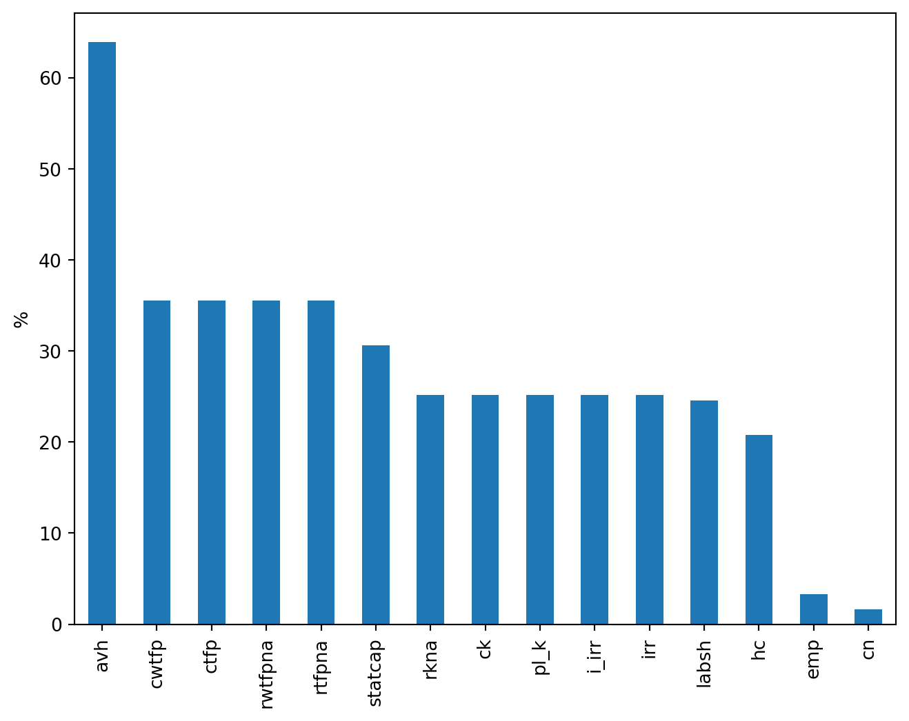
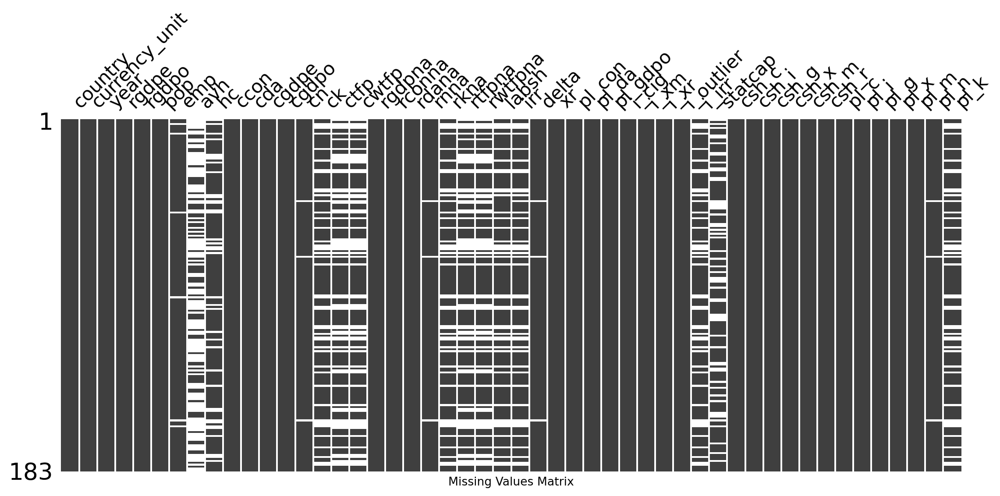
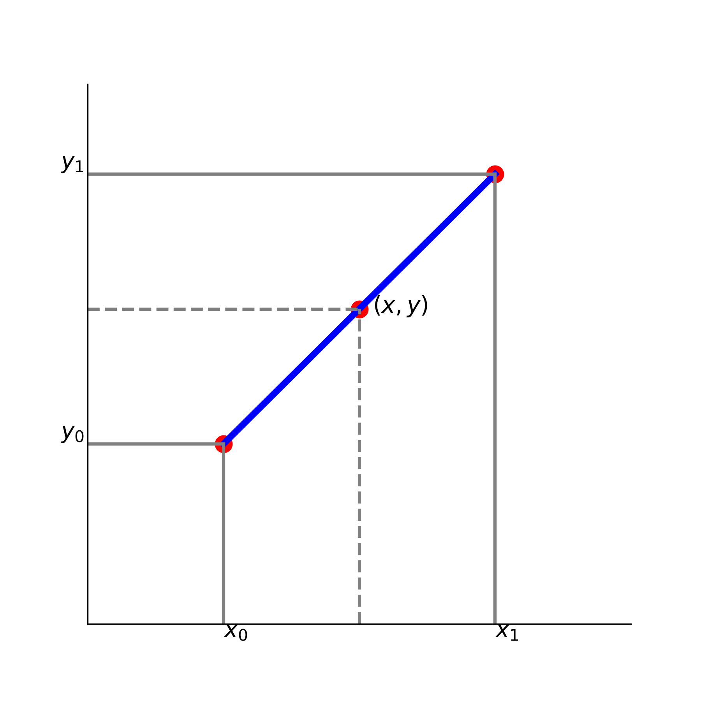
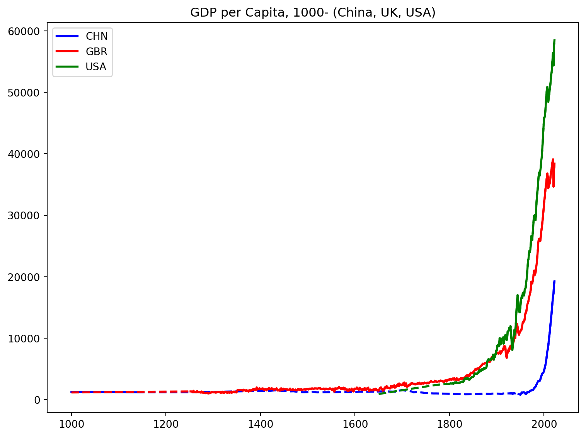
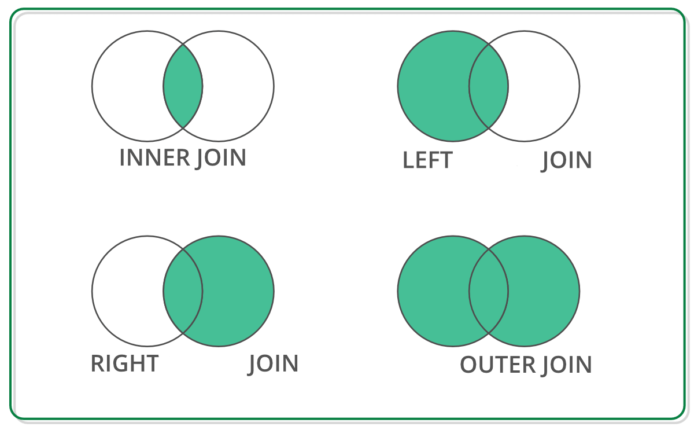
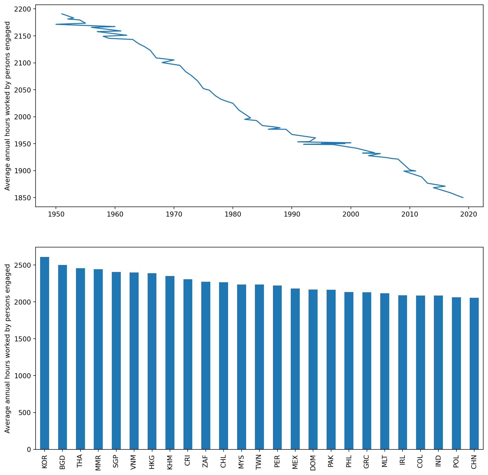

import numpy as np
import pandas as pd
import matplotlib.pyplot as plt
plt.rcParams["figure.figsize"] = (8, 6)
import wbgapi as wbPandas 基础应用
Pandas是数据分析最常用的包，从基本的数据处理到更复杂的统计功能，如 statsmodels 和 scikit-learn库，都是建立在pandas基础上的。
这一部分应用Penn World Table介绍应用Pandas处理原始数据的一些常用方法。该数据集当前版本为PWT 10.01，包含183个国家1950-2019年的收入、产出、投入和生产率等指标，详细介绍可参见User Guide to PWT 10.0 data files。数据背后的方法、理论及使用建议，可参见 Feenstra, Inklaar, and Timmer (2015)。
同样，在进行进一步操作之前，先载入必要的库：
载入数据
创建DataFrame
可以由数组、列表、字典、序列等创建数据框。例如，使用Numpy生成两列服从正态分布的随机数：
X = np.random.normal(loc=1, scale=2, size=(100, 2))
df = pd.DataFrame(data=X,
columns=['X1', 'X2'])
df.head()| X1 | X2 | |
|---|---|---|
| 0 | 1.432709 | -1.118539 |
| 1 | 5.984532 | 2.330193 |
| 2 | -2.847196 | -0.474233 |
| 3 | -1.882047 | -2.059043 |
| 4 | 0.694892 | 1.284894 |
下面来看字典的例子。定义字典常采用两种方式:
- 面向列的字典，字典的键代表表格的列名，而每个值是一个包含该列所有数据的列表。当使用
pd.DataFrame(data)创建 DataFrame 时，会直接将这些键作为列名，值作为列数据：
data = {
'地区': ['江苏省', '浙江省', '上海市'],
'人口（万人）': [8526, 6627, 2487],
'人均国内生产总值（元）': [150487, 125043, 19032]
}
pd.DataFrame(data)| 地区 | 人口（万人） | 人均国内生产总值（元） | |
|---|---|---|---|
| 0 | 江苏省 | 8526 | 150487 |
| 1 | 浙江省 | 6627 | 125043 |
| 2 | 上海市 | 2487 | 19032 |
- 面向行的字典，将每一行数据定义为一个独立的字典，然后将这些字典放入一个列表中。每个字典的键是列名，值是该行对应的数据。
data = [
{'地区': '江苏省', '人口（万人）': 8526, '人均国内生产总值（元）': 150487},
{'地区': '浙江省', '人口（万人）': 6627, '人均国内生产总值（元）': 125043},
{'地区': '上海市', '人口（万人）': 2487, '人均国内生产总值（元）': 19032}
]
pd.DataFrame(data)| 地区 | 人口（万人） | 人均国内生产总值（元） | |
|---|---|---|---|
| 0 | 江苏省 | 8526 | 150487 |
| 1 | 浙江省 | 6627 | 125043 |
| 2 | 上海市 | 2487 | 19032 |
读取数据
Pandas提供了广泛的导入数据的命令，当前主要软件存储格式的文件，csv, excel, stata, html, json,sql等，几乎都可以识别。 网站提供了Stata和Excel格式数据，假设数据保存在当前路径的datasets子文件中。Excel格式数据使用pd.read_excel()函数读取数据，有多个表单需要用参数sheet_name指明表单名称：
pwt = pd.read_excel(io = "datasets/pwt1001.xlsx",
header=0,
sheet_name="Data")注意其中的几个参数，io是文件路径；header表明列标题行，这里是第一行；sheet_name是数据所在表单名；将载入的数据赋值给pwt数据框。
如果下载了Stata格式，使用pd.read_stata()函数读取数据：
pwt = pd.read_stata(filepath_or_buffer="datasets/pwt1001.dta")Pandas中的Series 基于Numpy数组，支持许多类似运算，可以看作一“列”数据；
pop = pwt['pop']
type(pop)pandas.core.series.Series序列与Numpy数组一样有许多方法运算，读者可以参阅pandas.Series。数据处理中主要对象是DataFrame，类似Excel表单每一列对应一个变量。索引（index）对应行，变量列名（columns）对应列。
Penn World Table 数据本身是一个面板数据（Panel Data），“国家 - 年” 唯一识别一个观测值。我们从截面数据入手先只保留2019年数据，然后再看多索引的情况。这里.copy()拷贝了原数据生成一个新的数据框，这样即使改变数据也不影响初始的数据框。另外，变量cor_exp在2019年全部为缺失值，这里直接删除了。
pwt2019 = pwt[pwt['year'] == 2019].copy().drop(labels='cor_exp', axis=1)Pandas的基本操作
设置索引
先为pwt2019数据框设置索引(index)变量，这里使用国家名代码变量（countrycode），inplace=True选项原地改变数据框，不需要另外赋值：
pwt2019.set_index('countrycode', inplace=True)概览数据
可以df.info()概率数据集，或者使用df.head()或df.tail()查看头部和尾部观测值：
pwt2019.info()
pwt2019.head()<class 'pandas.core.frame.DataFrame'>
Index: 183 entries, ABW to ZWE
Data columns (total 50 columns):
# Column Non-Null Count Dtype
--- ------ -------------- -----
0 country 183 non-null object
1 currency_unit 183 non-null object
2 year 183 non-null int16
3 rgdpe 183 non-null float32
4 rgdpo 183 non-null float32
5 pop 183 non-null float64
6 emp 177 non-null float32
7 avh 66 non-null float64
8 hc 145 non-null float32
9 ccon 183 non-null float32
10 cda 183 non-null float32
11 cgdpe 183 non-null float32
12 cgdpo 183 non-null float32
13 cn 180 non-null float32
14 ck 137 non-null float32
15 ctfp 118 non-null float32
16 cwtfp 118 non-null float32
17 rgdpna 183 non-null float32
18 rconna 183 non-null float32
19 rdana 183 non-null float32
20 rnna 180 non-null float32
21 rkna 137 non-null float32
22 rtfpna 118 non-null float32
23 rwtfpna 118 non-null float32
24 labsh 138 non-null float32
25 irr 137 non-null float32
26 delta 180 non-null float32
27 xr 183 non-null float64
28 pl_con 183 non-null float32
29 pl_da 183 non-null float32
30 pl_gdpo 183 non-null float32
31 i_cig 183 non-null category
32 i_xm 183 non-null category
33 i_xr 183 non-null category
34 i_outlier 183 non-null category
35 i_irr 137 non-null category
36 statcap 127 non-null float64
37 csh_c 183 non-null float32
38 csh_i 183 non-null float32
39 csh_g 183 non-null float32
40 csh_x 183 non-null float32
41 csh_m 183 non-null float32
42 csh_r 183 non-null float32
43 pl_c 183 non-null float32
44 pl_i 183 non-null float32
45 pl_g 183 non-null float32
46 pl_x 183 non-null float32
47 pl_m 183 non-null float32
48 pl_n 180 non-null float32
49 pl_k 137 non-null float32
dtypes: category(5), float32(38), float64(4), int16(1), object(2)
memory usage: 39.2+ KB| country | currency_unit | year | rgdpe | rgdpo | pop | emp | avh | hc | ccon | ... | csh_x | csh_m | csh_r | pl_c | pl_i | pl_g | pl_x | pl_m | pl_n | pl_k | |
|---|---|---|---|---|---|---|---|---|---|---|---|---|---|---|---|---|---|---|---|---|---|
| countrycode | |||||||||||||||||||||
| ABW | Aruba | Aruban Guilder | 2019 | 3921.261230 | 3467.299561 | 0.106314 | 0.047601 | NaN | NaN | 3023.694824 | ... | 0.973115 | -1.091808 | 2.125691e-07 | 0.883092 | 0.815759 | 0.744329 | 0.707260 | 0.622660 | 0.805100 | 0.648114 |
| AGO | Angola | Kwanza | 2019 | 228151.015625 | 227855.718750 | 31.825295 | 16.644962 | NaN | 1.481984 | 155943.718750 | ... | 0.344351 | -0.113983 | -1.204703e-01 | 0.438169 | 0.342872 | 0.240024 | 0.476486 | 0.611627 | 0.211084 | 0.396034 |
| AIA | Anguilla | East Caribbean Dollar | 2019 | 376.634979 | 225.680527 | 0.014869 | NaN | NaN | NaN | 438.470032 | ... | 1.480300 | -2.445801 | -1.433542e-01 | 1.064513 | 1.029199 | 0.732212 | 0.768944 | 0.602734 | 0.897989 | NaN |
| ALB | Albania | Lek | 2019 | 35890.019531 | 36103.042969 | 2.880917 | 1.075898 | NaN | 2.964992 | 33399.167969 | ... | 0.126594 | -0.313949 | 6.114468e-02 | 0.473077 | 0.456882 | 0.235589 | 0.629832 | 0.525463 | 0.300975 | NaN |
| ARE | United Arab Emirates | UAE Dirham | 2019 | 681525.812500 | 645956.250000 | 9.770529 | 5.808834 | NaN | 2.746695 | 306771.156250 | ... | 0.889652 | -0.701231 | -4.849206e-07 | 0.725061 | 0.480580 | 0.692488 | 0.688882 | 0.647336 | 0.270424 | NaN |
5 rows × 50 columns
默认显示5条观测值，如果希望看到更多观测值，可以使用 df.tail(n=10) 修改数值。
可以应用.shape, .ndim,.columns等属性查看基本信息，可以看到数据集包含51个变量共183个观测值。
print(pwt2019.shape)
print(pwt2019.columns)(183, 50)
Index(['country', 'currency_unit', 'year', 'rgdpe', 'rgdpo', 'pop', 'emp',
'avh', 'hc', 'ccon', 'cda', 'cgdpe', 'cgdpo', 'cn', 'ck', 'ctfp',
'cwtfp', 'rgdpna', 'rconna', 'rdana', 'rnna', 'rkna', 'rtfpna',
'rwtfpna', 'labsh', 'irr', 'delta', 'xr', 'pl_con', 'pl_da', 'pl_gdpo',
'i_cig', 'i_xm', 'i_xr', 'i_outlier', 'i_irr', 'statcap', 'csh_c',
'csh_i', 'csh_g', 'csh_x', 'csh_m', 'csh_r', 'pl_c', 'pl_i', 'pl_g',
'pl_x', 'pl_m', 'pl_n', 'pl_k'],
dtype='object')df.describe()函数报告数值型变量基本的描述统计量，如观测值数、最小/大值等：
pwt2019.describe()| year | rgdpe | rgdpo | pop | emp | avh | hc | ccon | cda | cgdpe | ... | csh_x | csh_m | csh_r | pl_c | pl_i | pl_g | pl_x | pl_m | pl_n | pl_k | |
|---|---|---|---|---|---|---|---|---|---|---|---|---|---|---|---|---|---|---|---|---|---|
| count | 183.0 | 1.830000e+02 | 1.830000e+02 | 183.000000 | 177.000000 | 66.000000 | 145.000000 | 1.830000e+02 | 1.830000e+02 | 1.830000e+02 | ... | 183.000000 | 183.000000 | 183.000000 | 183.000000 | 183.000000 | 183.000000 | 183.000000 | 183.000000 | 180.000000 | 137.000000 |
| mean | 2019.0 | 6.856771e+05 | 6.845371e+05 | 41.425665 | 18.736708 | 1849.981084 | 2.709271 | 4.942579e+05 | 6.783440e+05 | 6.832245e+05 | ... | 0.289549 | -0.395140 | 0.047751 | 0.682804 | 0.806373 | 0.593989 | 0.647064 | 0.608261 | 0.563515 | 0.835093 |
| std | 0.0 | 2.326857e+06 | 2.326577e+06 | 150.991398 | 72.598854 | 269.239240 | 0.702803 | 1.622457e+06 | 2.332140e+06 | 2.315811e+06 | ... | 0.318229 | 0.352245 | 0.132470 | 1.324540 | 2.508052 | 1.060947 | 0.072499 | 0.060341 | 1.523753 | 1.048638 |
| min | 2019.0 | 9.919158e+01 | 7.769418e+01 | 0.004989 | 0.002537 | 1380.607643 | 1.224987 | 1.432163e+02 | 1.593778e+02 | 9.965278e+01 | ... | 0.000002 | -2.445801 | -0.402837 | 0.164474 | 0.238807 | 0.048096 | 0.410998 | 0.430082 | 0.102959 | 0.157861 |
| 25% | 2019.0 | 2.542229e+04 | 2.496249e+04 | 2.148923 | 0.966091 | 1650.921776 | 2.157010 | 2.015232e+04 | 2.440136e+04 | 2.538902e+04 | ... | 0.089786 | -0.500661 | -0.004248 | 0.386795 | 0.496182 | 0.301914 | 0.611683 | 0.569492 | 0.315582 | 0.509706 |
| 50% | 2019.0 | 8.906167e+04 | 8.964218e+04 | 8.955102 | 4.235073 | 1818.281597 | 2.776406 | 7.898192e+04 | 9.572196e+04 | 8.879797e+04 | ... | 0.192402 | -0.299031 | 0.010712 | 0.494755 | 0.573736 | 0.440775 | 0.658543 | 0.602733 | 0.396131 | 0.657925 |
| 75% | 2019.0 | 4.438705e+05 | 4.277259e+05 | 29.763979 | 11.694400 | 2061.049973 | 3.259456 | 3.095488e+05 | 4.139670e+05 | 4.424204e+05 | ... | 0.358440 | -0.170650 | 0.073669 | 0.733338 | 0.729491 | 0.662306 | 0.688106 | 0.645397 | 0.529977 | 0.850074 |
| max | 2019.0 | 2.086051e+07 | 2.059584e+07 | 1433.783686 | 798.807739 | 2474.911893 | 4.351568 | 1.682624e+07 | 2.138355e+07 | 2.079136e+07 | ... | 2.194109 | -0.001072 | 0.704883 | 18.143538 | 34.444988 | 14.175777 | 0.882256 | 0.847409 | 20.694918 | 12.002436 |
8 rows × 43 columns
选择观测值和变量
应用中经常需要对某些观测值或特定子样本进行操作，就需要选择观测值和变量。
选择特定的行，在Python中最基本的方法是采用数组切片（slicing）方式。例如，选择第3至5个观测值，注意索引对应的是[2:5]：
pwt2019[2:5]| country | currency_unit | year | rgdpe | rgdpo | pop | emp | avh | hc | ccon | ... | csh_x | csh_m | csh_r | pl_c | pl_i | pl_g | pl_x | pl_m | pl_n | pl_k | |
|---|---|---|---|---|---|---|---|---|---|---|---|---|---|---|---|---|---|---|---|---|---|
| countrycode | |||||||||||||||||||||
| AIA | Anguilla | East Caribbean Dollar | 2019 | 376.634979 | 225.680527 | 0.014869 | NaN | NaN | NaN | 438.470032 | ... | 1.480300 | -2.445801 | -1.433542e-01 | 1.064513 | 1.029199 | 0.732212 | 0.768944 | 0.602734 | 0.897989 | NaN |
| ALB | Albania | Lek | 2019 | 35890.019531 | 36103.042969 | 2.880917 | 1.075898 | NaN | 2.964992 | 33399.167969 | ... | 0.126594 | -0.313949 | 6.114468e-02 | 0.473077 | 0.456882 | 0.235589 | 0.629832 | 0.525463 | 0.300975 | NaN |
| ARE | United Arab Emirates | UAE Dirham | 2019 | 681525.812500 | 645956.250000 | 9.770529 | 5.808834 | NaN | 2.746695 | 306771.156250 | ... | 0.889652 | -0.701231 | -4.849206e-07 | 0.725061 | 0.480580 | 0.692488 | 0.688882 | 0.647336 | 0.270424 | NaN |
3 rows × 50 columns
要选择列，可以用包含列名字的列表指定：
vars_selected = ['country', 'rgdpe', 'rgdpo', 'pop', 'emp', 'cgdpe', 'cgdpo', 'ctfp' ]
pwt2019_sub = pwt2019[vars_selected]
pwt2019_sub.head()| country | rgdpe | rgdpo | pop | emp | cgdpe | cgdpo | ctfp | |
|---|---|---|---|---|---|---|---|---|
| countrycode | ||||||||
| ABW | Aruba | 3921.261230 | 3467.299561 | 0.106314 | 0.047601 | 3912.334717 | 3466.241943 | NaN |
| AGO | Angola | 228151.015625 | 227855.718750 | 31.825295 | 16.644962 | 227771.609375 | 223289.312500 | 0.387996 |
| AIA | Anguilla | 376.634979 | 225.680527 | 0.014869 | NaN | 375.136444 | 241.384537 | NaN |
| ALB | Albania | 35890.019531 | 36103.042969 | 2.880917 | 1.075898 | 35808.343750 | 36288.328125 | NaN |
| ARE | United Arab Emirates | 681525.812500 | 645956.250000 | 9.770529 | 5.808834 | 678241.187500 | 635332.812500 | NaN |
.loc方法
.loc 是基于标签（label-based） 的数据选择方法。这意味着你使用行和列的实际标签名来选择数据，而不是它们的整数位置。
在之前我们将ISO国家代码设置位索引，因此选择列时可以用索引标签进行。例如，要选择金砖国家（BRICKS）的观测值：
bricks = ['CHN', 'BRA', 'RUS', 'IND', 'ZAF']
pwt2019.loc[bricks]| country | currency_unit | year | rgdpe | rgdpo | pop | emp | avh | hc | ccon | ... | csh_x | csh_m | csh_r | pl_c | pl_i | pl_g | pl_x | pl_m | pl_n | pl_k | |
|---|---|---|---|---|---|---|---|---|---|---|---|---|---|---|---|---|---|---|---|---|---|
| countrycode | |||||||||||||||||||||
| CHN | China | Yuan Renminbi | 2019 | 20056066.0 | 2.025766e+07 | 1433.783686 | 798.807739 | 2168.918848 | 2.698987 | 1.056606e+07 | ... | 0.192402 | -0.167672 | -4.100976e-03 | 0.716501 | 0.679048 | 0.865375 | 0.695068 | 0.734048 | 0.457278 | 0.598894 |
| BRA | Brazil | Brazilian Real | 2019 | 3089273.5 | 3.080048e+06 | 211.049527 | 93.956825 | 1707.795058 | 3.091373 | 2.566911e+06 | ... | 0.132833 | -0.137775 | 1.377994e-07 | 0.599450 | 0.528862 | 0.663023 | 0.646922 | 0.638165 | 0.355756 | 0.579635 |
| RUS | Russian Federation | Russian Ruble | 2019 | 4197222.5 | 4.161194e+06 | 145.872256 | 71.670639 | 1965.000000 | 3.434408 | 3.170826e+06 | ... | 0.178951 | -0.086548 | -2.315040e-02 | 0.411263 | 0.573736 | 0.281037 | 0.576825 | 0.690811 | 0.466877 | 0.366449 |
| IND | India | Indian Rupee | 2019 | 8945547.0 | 9.170555e+06 | 1366.417754 | 497.615723 | 2122.940682 | 2.171165 | 6.608024e+06 | ... | 0.051035 | -0.077878 | 3.370060e-02 | 0.294905 | 0.356979 | 0.471800 | 0.692824 | 0.672622 | 0.210450 | 0.395132 |
| ZAF | South Africa | Rand | 2019 | 748940.0 | 7.340944e+05 | 58.558270 | 18.642710 | 2191.363362 | 2.908202 | 6.236696e+05 | ... | 0.184207 | -0.198112 | 4.914912e-03 | 0.463660 | 0.523813 | 0.447869 | 0.660216 | 0.604546 | 0.315006 | 0.525546 |
5 rows × 50 columns
或者选择列指定列标签（名），效果与不使用.loc()只使用变量名效果一样。
variables = ['country', 'rgdpe', 'pop']
pwt2019.loc[:, variables]| country | rgdpe | pop | |
|---|---|---|---|
| countrycode | |||
| ABW | Aruba | 3921.261230 | 0.106314 |
| AGO | Angola | 228151.015625 | 31.825295 |
| AIA | Anguilla | 376.634979 | 0.014869 |
| ALB | Albania | 35890.019531 | 2.880917 |
| ARE | United Arab Emirates | 681525.812500 | 9.770529 |
| ... | ... | ... | ... |
| VNM | Viet Nam | 750726.750000 | 96.462106 |
| YEM | Yemen | 50052.933594 | 29.161922 |
| ZAF | South Africa | 748940.000000 | 58.558270 |
| ZMB | Zambia | 57956.183594 | 17.861030 |
| ZWE | Zimbabwe | 42296.062500 | 14.645468 |
183 rows × 3 columns
或者同时指定行和列：
pwt2019.loc[bricks, variables]| country | rgdpe | pop | |
|---|---|---|---|
| countrycode | |||
| CHN | China | 20056066.0 | 1433.783686 |
| BRA | Brazil | 3089273.5 | 211.049527 |
| RUS | Russian Federation | 4197222.5 | 145.872256 |
| IND | India | 8945547.0 | 1366.417754 |
| ZAF | South Africa | 748940.0 | 58.558270 |
等价于
pwt2019.loc[bricks][variables]| country | rgdpe | pop | |
|---|---|---|---|
| countrycode | |||
| CHN | China | 20056066.0 | 1433.783686 |
| BRA | Brazil | 3089273.5 | 211.049527 |
| RUS | Russian Federation | 4197222.5 | 145.872256 |
| IND | India | 8945547.0 | 1366.417754 |
| ZAF | South Africa | 748940.0 | 58.558270 |
.iloc方法
相应的，.iloc 是使用行和列的整数位置（从 0 开始）来选择数据。这里需要注意Python中索引位置，进行切片（slicing）操作时，语法类似 [start:end]，要注意：
start：切片的起始索引，对应的元素会被包含。end：切片的结束索引，对应的元素不会被包含。例如：
选择第2行数据（索引位置为1），结果得到一个序列:
pwt2019.iloc[1]country Angola
currency_unit Kwanza
year 2019
rgdpe 228151.015625
rgdpo 227855.71875
pop 31.825295
emp 16.644962
avh NaN
hc 1.481984
ccon 155943.71875
cda 198750.421875
cgdpe 227771.609375
cgdpo 223289.3125
cn 1299231.5
ck 0.016624
ctfp 0.387996
cwtfp 0.332153
rgdpna 222151.0625
rconna 155270.703125
rdana 198864.734375
rnna 1300951.0
rkna 1.005457
rtfpna 0.936524
rwtfpna 0.916698
labsh 0.331142
irr 0.11585
delta 0.043606
xr 364.825805
pl_con 0.381504
pl_da 0.373184
pl_gdpo 0.380675
i_cig Extrapolated
i_xm Extrapolated
i_xr Market-based
i_outlier Regular
i_irr Regular
statcap 48.8889
csh_c 0.49867
csh_i 0.19171
csh_g 0.199723
csh_x 0.344351
csh_m -0.113983
csh_r -0.12047
pl_c 0.438169
pl_i 0.342872
pl_g 0.240024
pl_x 0.476486
pl_m 0.611627
pl_n 0.211084
pl_k 0.396034
Name: AGO, dtype: object选择第1行（索引为0）、第3行（索引为2）和第5行（索引为4）
pwt2019.iloc[[0, 2, 4]]| country | currency_unit | year | rgdpe | rgdpo | pop | emp | avh | hc | ccon | ... | csh_x | csh_m | csh_r | pl_c | pl_i | pl_g | pl_x | pl_m | pl_n | pl_k | |
|---|---|---|---|---|---|---|---|---|---|---|---|---|---|---|---|---|---|---|---|---|---|
| countrycode | |||||||||||||||||||||
| ABW | Aruba | Aruban Guilder | 2019 | 3921.261230 | 3467.299561 | 0.106314 | 0.047601 | NaN | NaN | 3023.694824 | ... | 0.973115 | -1.091808 | 2.125691e-07 | 0.883092 | 0.815759 | 0.744329 | 0.707260 | 0.622660 | 0.805100 | 0.648114 |
| AIA | Anguilla | East Caribbean Dollar | 2019 | 376.634979 | 225.680527 | 0.014869 | NaN | NaN | NaN | 438.470032 | ... | 1.480300 | -2.445801 | -1.433542e-01 | 1.064513 | 1.029199 | 0.732212 | 0.768944 | 0.602734 | 0.897989 | NaN |
| ARE | United Arab Emirates | UAE Dirham | 2019 | 681525.812500 | 645956.250000 | 9.770529 | 5.808834 | NaN | 2.746695 | 306771.156250 | ... | 0.889652 | -0.701231 | -4.849206e-07 | 0.725061 | 0.480580 | 0.692488 | 0.688882 | 0.647336 | 0.270424 | NaN |
3 rows × 50 columns
选择前5行、第4至第6列观测值
pwt2019.iloc[:5, 3:6]| rgdpe | rgdpo | pop | |
|---|---|---|---|
| countrycode | |||
| ABW | 3921.261230 | 3467.299561 | 0.106314 |
| AGO | 228151.015625 | 227855.718750 | 31.825295 |
| AIA | 376.634979 | 225.680527 | 0.014869 |
| ALB | 35890.019531 | 36103.042969 | 2.880917 |
| ARE | 681525.812500 | 645956.250000 | 9.770529 |
根据条件筛选
除了根据索引或位置选择数据外，也可以利用条件来筛选观测值。例如，根据人口变量（pop，单位：百万）选择2019年总人口超过2亿的观测值：
pwt2019[pwt2019['pop'] >= 200]| country | currency_unit | year | rgdpe | rgdpo | pop | emp | avh | hc | ccon | ... | csh_x | csh_m | csh_r | pl_c | pl_i | pl_g | pl_x | pl_m | pl_n | pl_k | |
|---|---|---|---|---|---|---|---|---|---|---|---|---|---|---|---|---|---|---|---|---|---|
| countrycode | |||||||||||||||||||||
| BRA | Brazil | Brazilian Real | 2019 | 3.089274e+06 | 3.080048e+06 | 211.049527 | 93.956825 | 1707.795058 | 3.091373 | 2.566911e+06 | ... | 0.132833 | -0.137775 | 1.377994e-07 | 0.599450 | 0.528862 | 0.663023 | 0.646922 | 0.638165 | 0.355756 | 0.579635 |
| CHN | China | Yuan Renminbi | 2019 | 2.005607e+07 | 2.025766e+07 | 1433.783686 | 798.807739 | 2168.918848 | 2.698987 | 1.056606e+07 | ... | 0.192402 | -0.167672 | -4.100976e-03 | 0.716501 | 0.679048 | 0.865375 | 0.695068 | 0.734048 | 0.457278 | 0.598894 |
| IDN | Indonesia | Rupiah | 2019 | 3.104439e+06 | 3.137931e+06 | 270.625568 | 131.170685 | 2019.923395 | 2.288165 | 2.051190e+06 | ... | 0.089377 | -0.081947 | -1.223290e-03 | 0.377086 | 0.359957 | 0.295082 | 0.601248 | 0.669811 | 0.215823 | 0.387587 |
| IND | India | Indian Rupee | 2019 | 8.945547e+06 | 9.170555e+06 | 1366.417754 | 497.615723 | 2122.940682 | 2.171165 | 6.608024e+06 | ... | 0.051035 | -0.077878 | 3.370060e-02 | 0.294905 | 0.356979 | 0.471800 | 0.692824 | 0.672622 | 0.210450 | 0.395132 |
| NGA | Nigeria | Naira | 2019 | 9.834982e+05 | 1.001537e+06 | 200.963599 | 73.020554 | NaN | 1.974245 | 9.300954e+05 | ... | 0.106134 | -0.078965 | -6.898887e-02 | 0.418511 | 1.166929 | 0.288400 | 0.507703 | 0.602859 | 0.788816 | 0.920094 |
| PAK | Pakistan | Pakistan Rupee | 2019 | 1.036800e+06 | 1.088502e+06 | 216.565318 | 63.085052 | 1966.907180 | 1.770760 | 1.023950e+06 | ... | 0.040008 | -0.087298 | -2.582011e-14 | 0.231672 | 0.340412 | 0.287822 | 0.571041 | 0.537927 | 0.205466 | NaN |
| USA | United States | US Dollar | 2019 | 2.086051e+07 | 2.059584e+07 | 329.064917 | 158.299591 | 1765.346390 | 3.749341 | 1.682624e+07 | ... | 0.111490 | -0.165832 | 1.459136e-02 | 1.005707 | 0.988310 | 1.266850 | 0.717118 | 0.752818 | 1.069356 | 1.000000 |
7 rows × 50 columns
注意，条件pwt2019['pop'] >= 200 的结果是一列布林值，然后pwt2019[]选择返回取值为True的观测值。
再例如，下面的代码包含了两个条件：
- 国家名属于金砖国家。注意这里使用了Pandas 中的
df.isin()函数； - 2019年人口超过10亿。
当有不止一个条件时，我们用&, |表示and 和 or运算符；
BRICKS = ['China','Brazil', ' Russian Federation', 'India', 'South Africa']
#
pwt2019[(pwt2019['country'].isin(BRICKS)) & (pwt2019['pop'] > 1000)]| country | currency_unit | year | rgdpe | rgdpo | pop | emp | avh | hc | ccon | ... | csh_x | csh_m | csh_r | pl_c | pl_i | pl_g | pl_x | pl_m | pl_n | pl_k | |
|---|---|---|---|---|---|---|---|---|---|---|---|---|---|---|---|---|---|---|---|---|---|
| countrycode | |||||||||||||||||||||
| CHN | China | Yuan Renminbi | 2019 | 20056066.0 | 20257660.0 | 1433.783686 | 798.807739 | 2168.918848 | 2.698987 | 10566063.0 | ... | 0.192402 | -0.167672 | -0.004101 | 0.716501 | 0.679048 | 0.865375 | 0.695068 | 0.734048 | 0.457278 | 0.598894 |
| IND | India | Indian Rupee | 2019 | 8945547.0 | 9170555.0 | 1366.417754 | 497.615723 | 2122.940682 | 2.171165 | 6608023.5 | ... | 0.051035 | -0.077878 | 0.033701 | 0.294905 | 0.356979 | 0.471800 | 0.692824 | 0.672622 | 0.210450 | 0.395132 |
2 rows × 50 columns
更复杂的情况，可以在条件语句中加入数学表达式。例如，下面的代码筛选了人均实际GDP超过2万美元和人口超过5000万的国家的观测值，这里人均实际GDP是购买力平价调整后支出法衡量的实际GDP与人口的比值：
pwt2019[(pwt2019['rgdpe']/pwt2019['pop'] > 20000) & (pwt2019['pop'] > 50)]| country | currency_unit | year | rgdpe | rgdpo | pop | emp | avh | hc | ccon | ... | csh_x | csh_m | csh_r | pl_c | pl_i | pl_g | pl_x | pl_m | pl_n | pl_k | |
|---|---|---|---|---|---|---|---|---|---|---|---|---|---|---|---|---|---|---|---|---|---|
| countrycode | |||||||||||||||||||||
| DEU | Germany | Euro | 2019 | 4.308862e+06 | 4275312.00 | 83.517045 | 44.795197 | 1386.196834 | 3.675378 | 3.078229e+06 | ... | 0.603715 | -0.550977 | 0.000000 | 0.881662 | 0.850929 | 1.006024 | 0.701677 | 0.673799 | 0.822418 | 0.651490 |
| FRA | France | Euro | 2019 | 3.018885e+06 | 2946958.25 | 67.351247 | 28.532564 | 1504.912353 | 3.230137 | 2.233350e+06 | ... | 0.274841 | -0.327385 | 0.022188 | 0.913003 | 0.813518 | 0.987091 | 0.686175 | 0.665962 | 0.716193 | 0.576515 |
| GBR | United Kingdom | Pound Sterling | 2019 | 3.118991e+06 | 2989895.50 | 67.530172 | 32.982498 | 1667.947711 | 3.773596 | 2.414706e+06 | ... | 0.227445 | -0.346071 | 0.065275 | 0.992262 | 0.699868 | 0.912168 | 0.687633 | 0.668252 | 0.624869 | 0.796017 |
| ITA | Italy | Euro | 2019 | 2.508404e+06 | 2466327.50 | 60.550075 | 25.596329 | 1717.833818 | 3.158385 | 1.810091e+06 | ... | 0.307117 | -0.292341 | 0.001006 | 0.846609 | 0.590234 | 0.969897 | 0.704260 | 0.657741 | 0.471262 | 0.585280 |
| JPN | Japan | Yen | 2019 | 5.028348e+06 | 5036891.00 | 126.860301 | 69.976692 | 1691.085260 | 3.593987 | 3.765120e+06 | ... | 0.190841 | -0.190701 | 0.005592 | 1.048585 | 1.007949 | 0.932528 | 0.734816 | 0.751225 | 1.011635 | 0.788685 |
| KOR | Republic of Korea | Won | 2019 | 2.090946e+06 | 2162705.25 | 51.225308 | 26.798534 | 1979.526258 | 3.765123 | 1.314779e+06 | ... | 0.466232 | -0.403080 | 0.000459 | 0.848224 | 0.732208 | 0.758751 | 0.654067 | 0.701660 | 0.557140 | 0.657925 |
| RUS | Russian Federation | Russian Ruble | 2019 | 4.197222e+06 | 4161194.50 | 145.872256 | 71.670639 | 1965.000000 | 3.434408 | 3.170826e+06 | ... | 0.178951 | -0.086548 | -0.023150 | 0.411263 | 0.573736 | 0.281037 | 0.576825 | 0.690811 | 0.466877 | 0.366449 |
| TUR | Turkey | New Turkish Lira | 2019 | 2.227538e+06 | 2248225.75 | 83.429615 | 28.087334 | 1832.000000 | 2.514292 | 1.555716e+06 | ... | 0.119963 | -0.147055 | 0.066752 | 0.393921 | 0.313990 | 0.259054 | 0.671110 | 0.636799 | 0.207867 | 0.477120 |
| USA | United States | US Dollar | 2019 | 2.086051e+07 | 20595844.00 | 329.064917 | 158.299591 | 1765.346390 | 3.749341 | 1.682624e+07 | ... | 0.111490 | -0.165832 | 0.014591 | 1.005707 | 0.988310 | 1.266850 | 0.717118 | 0.752818 | 1.069356 | 1.000000 |
9 rows × 50 columns
注意，当用 Pandas 进行数据筛选时，需要使用 &(|) 而不是 and(or) 来连接多个条件。
& 和 | 是 NumPy 的按位运算符，Pandas 借用了它们来实现元素级的逻辑运算:
&(按位与)：对两个布尔系列中的每个对应元素进行AND运算。只有当两个对应元素都为True时，结果才为True。|(按位或)：对两个布尔系列中的每个对应元素进行OR运算。只要其中一个对应元素为True，结果就为True。
apply 方法
Pandas中一个广泛应用的方法是 df.apply()，它将一个函数应用到每一行/列，返回一个序列；
函数可以是内嵌的（built in）也可以是自定义的，例如，计算每一列的最大值，这里使用了Numpy库的max函数：
pwt2019_sub.apply(np.max, axis=0)country Zimbabwe
rgdpe 20860506.0
rgdpo 20595844.0
pop 1433.783686
emp 798.807739
cgdpe 20791364.0
cgdpo 20566034.0
ctfp 1.276913
dtype: object或者，自定义一个函数range(x)计算极差：
def range(x):
return np.max(x) - np.min(x)
pwt2019_sub.select_dtypes(np.number).apply(range)rgdpe 2.086041e+07
rgdpo 2.059577e+07
pop 1.433779e+03
emp 7.988052e+02
cgdpe 2.079126e+07
cgdpo 2.056595e+07
ctfp 1.222178e+00
dtype: float64再例如，归一化（normalization）经常使用minmax方法： \[ Y = \frac{X_{i} - \min(X_{i})}{\max(X_{i}) - \min(X_{i})} \]
我们定义一个函数minmax()，然后应用apply()方法：
def minmax(S):
return (S-S.min())/(S.max() - S.min())
pwt2019[['pop','rgdpe', 'emp']].apply(minmax)| pop | rgdpe | emp | |
|---|---|---|---|
| countrycode | |||
| ABW | 0.000071 | 0.000183 | 0.000056 |
| AGO | 0.022193 | 0.010932 | 0.020834 |
| AIA | 0.000007 | 0.000013 | NaN |
| ALB | 0.002006 | 0.001716 | 0.001344 |
| ARE | 0.006811 | 0.032666 | 0.007269 |
| ... | ... | ... | ... |
| VNM | 0.067275 | 0.035983 | 0.063091 |
| YEM | 0.020336 | 0.002395 | 0.006922 |
| ZAF | 0.040838 | 0.035898 | 0.023335 |
| ZMB | 0.012454 | 0.002774 | 0.006538 |
| ZWE | 0.010211 | 0.002023 | 0.008548 |
183 rows × 3 columns
经常将lambda函数方法与df.apply()方法相结合。例如，数据集中有4个指标度量GDP，分别是['rgdpe', 'rgdpo','cgdpe','cgdpo']，假设我们希望计算一个加权平均数，权重为（0.3，0.2，0.3，0.2）：
variables = ['rgdpe', 'rgdpo','cgdpe','cgdpo']
pwt2019[variables].apply(lambda row:
row['rgdpe']*0.3 + row['rgdpo']*0.2 + row['cgdpe']*0.3 + row['cgdpo']*0.2,
axis=1)countrycode
ABW 3736.787109
AGO 227005.796875
AIA 318.944458
ALB 35987.785156
ARE 664187.937500
...
VNM 739027.375000
YEM 50759.292969
ZAF 742988.125000
ZMB 57414.339844
ZWE 41768.011719
Length: 183, dtype: float32注意，选项axis = 1 ，将函数应用至每一行，默认值为0。
检测和处理缺失值
数据集不可避免会遇到存在缺失值的情况。在@sec-reading_data 部分导入数据时，Pandas中最常用的缺失值表示是NaN（Not a Number）。可以使用isnull()或isna()函数检测缺失值，返回一个布尔型的DataFrame，其中True表示缺失值：
#pwt2019.isnull()
pwt2019.isna().sum()country 0
currency_unit 0
year 0
rgdpe 0
rgdpo 0
pop 0
emp 6
avh 117
hc 38
ccon 0
cda 0
cgdpe 0
cgdpo 0
cn 3
ck 46
ctfp 65
cwtfp 65
rgdpna 0
rconna 0
rdana 0
rnna 3
rkna 46
rtfpna 65
rwtfpna 65
labsh 45
irr 46
delta 3
xr 0
pl_con 0
pl_da 0
pl_gdpo 0
i_cig 0
i_xm 0
i_xr 0
i_outlier 0
i_irr 46
statcap 56
csh_c 0
csh_i 0
csh_g 0
csh_x 0
csh_m 0
csh_r 0
pl_c 0
pl_i 0
pl_g 0
pl_x 0
pl_m 0
pl_n 3
pl_k 46
dtype: int64下面的的代码计展示了Pandas中链式操作的强大功能，仅用一行命令实现了：
- 计算了缺失值的数量
- 除以样本容量得到缺失值比例
- 按照降序排序
- 并将比例最高的前15个变量绘制柱形图：
fig, ax = plt.subplots()
(pwt2019.isna().sum()/pwt2019.shape[0] * 100).sort_values(ascending=False)[:15].plot(kind='bar', ax=ax)
ax.set_ylabel("%")
plt.show()
另一种图示的方法是类似矩阵绘图的方式，将缺失值标记出来，missingno库有简单的命令实现：
import missingno as msno
fig, ax = plt.subplots(figsize=(12,6))
msno.matrix(pwt2019,sparkline=False, ax=ax)
ax.set_xlabel("Missing Values Matrix")
plt.tight_layout()
plt.show()
删除缺失值
处理缺失值的方法有很多种，选择哪种方法取决于你的数据特性、缺失原因以及分析目标。最直接的方法是使用df.dropna()函数删除包含缺失值的行或列：
# 删除含缺失值的行
pwt2019.dropna()
# 删除含缺失值的列
pwt2019.dropna(axis=1)| country | currency_unit | year | rgdpe | rgdpo | pop | ccon | cda | cgdpe | cgdpo | ... | csh_i | csh_g | csh_x | csh_m | csh_r | pl_c | pl_i | pl_g | pl_x | pl_m | |
|---|---|---|---|---|---|---|---|---|---|---|---|---|---|---|---|---|---|---|---|---|---|
| countrycode | |||||||||||||||||||||
| ABW | Aruba | Aruban Guilder | 2019 | 3921.261230 | 3467.299561 | 0.106314 | 3023.694824 | 3877.659668 | 3912.334717 | 3466.241943 | ... | 0.246366 | 0.214084 | 0.973115 | -1.091808 | 2.125691e-07 | 0.883092 | 0.815759 | 0.744329 | 0.707260 | 0.622660 |
| AGO | Angola | Kwanza | 2019 | 228151.015625 | 227855.718750 | 31.825295 | 155943.718750 | 198750.421875 | 227771.609375 | 223289.312500 | ... | 0.191710 | 0.199723 | 0.344351 | -0.113983 | -1.204703e-01 | 0.438169 | 0.342872 | 0.240024 | 0.476486 | 0.611627 |
| AIA | Anguilla | East Caribbean Dollar | 2019 | 376.634979 | 225.680527 | 0.014869 | 438.470032 | 509.044983 | 375.136444 | 241.384537 | ... | 0.292376 | 0.303098 | 1.480300 | -2.445801 | -1.433542e-01 | 1.064513 | 1.029199 | 0.732212 | 0.768944 | 0.602734 |
| ALB | Albania | Lek | 2019 | 35890.019531 | 36103.042969 | 2.880917 | 33399.167969 | 40868.316406 | 35808.343750 | 36288.328125 | ... | 0.205828 | 0.206071 | 0.126594 | -0.313949 | 6.114468e-02 | 0.473077 | 0.456882 | 0.235589 | 0.629832 | 0.525463 |
| ARE | United Arab Emirates | UAE Dirham | 2019 | 681525.812500 | 645956.250000 | 9.770529 | 306771.156250 | 515623.312500 | 678241.187500 | 635332.812500 | ... | 0.328729 | 0.127105 | 0.889652 | -0.701231 | -4.849206e-07 | 0.725061 | 0.480580 | 0.692488 | 0.688882 | 0.647336 |
| ... | ... | ... | ... | ... | ... | ... | ... | ... | ... | ... | ... | ... | ... | ... | ... | ... | ... | ... | ... | ... | ... |
| VNM | Viet Nam | Dong | 2019 | 750726.750000 | 724123.375000 | 96.462106 | 582677.062500 | 758821.937500 | 747853.750000 | 723142.687500 | ... | 0.243582 | 0.095490 | 0.526032 | -0.518066 | -5.730492e-02 | 0.347591 | 0.399158 | 0.245056 | 0.695617 | 0.676502 |
| YEM | Yemen | Yemeni Rial | 2019 | 50052.933594 | 51828.058594 | 29.161922 | 49266.472656 | 67992.531250 | 49937.042969 | 51983.429688 | ... | 0.360231 | 0.300234 | 0.000723 | -0.135297 | -1.733917e-01 | 0.777612 | 0.238807 | 0.211786 | 0.632594 | 0.670528 |
| ZAF | South Africa | Rand | 2019 | 748940.000000 | 734094.375000 | 58.558270 | 623669.562500 | 741675.937500 | 748245.937500 | 735067.062500 | ... | 0.160538 | 0.227329 | 0.184207 | -0.198112 | 4.914912e-03 | 0.463660 | 0.523813 | 0.447869 | 0.660216 | 0.604546 |
| ZMB | Zambia | Kwacha | 2019 | 57956.183594 | 56783.714844 | 17.861030 | 38698.402344 | 56536.863281 | 57695.066406 | 56811.105469 | ... | 0.313996 | 0.171331 | 0.215397 | -0.238961 | 2.839118e-02 | 0.373077 | 0.482041 | 0.330470 | 0.574416 | 0.531915 |
| ZWE | Zimbabwe | US Dollar | 2019 | 42296.062500 | 40826.570312 | 14.645468 | 43961.839844 | 47128.785156 | 42325.117188 | 41081.722656 | ... | 0.077089 | 0.227109 | 0.213562 | -0.270959 | -8.979837e-02 | 0.494755 | 0.652439 | 0.500927 | 0.487763 | 0.430082 |
183 rows × 32 columns
上面的命令并没有改变原数据框，可以通过赋值方式保存删除后数据，或者使用df.dropna(inplace=True)，即在原数据框中生效。
数值填充
数值型变量缺失值处理中最简单的是用某个值进行填充，df.fillna()是核心函数。
在Penn World Data中有几个变量是分类变量，如i_icg, i_xm等，参见数据集Excel表中“Data information variables”的说明。如果简单使用pwt2019.fillna(0)的命令会报错。我们小需要只对数值型列的缺失值（NaN）进行填充，而其他非数值型列（如分类变量、文本等）则保持原样。下面的链式命令需要简单的说明：
.select_dtypes(np.number)筛选出所有数据类型为数值型（numeric）的列变量；.fillna(0)对筛选后的数据框上，用0填充缺失值；.combine_first(pwt2019)，是整个命令中最关键的一步。combine_first 是一个强大的方法，它将两个 DataFrame 按索引和列名进行合并。它的工作原理是：- 对于每一个位置（即索引和列），它首先查看调用者（也就是 .fillna(0) 之后得到的那个填充了 0 的数值型 DataFrame）的值。
- 如果调用者的值不是缺失值（NaN），就使用这个值。
- 如果调用者的值是缺失值（NaN），它就会去使用参数 pwt2019 中对应位置的值。
由于第一步已经将非数值型列移除了，因此在 .fillna(0) 之后的 DataFrame 中，这些被移除的列全部变成了 NaN，就会使用 pwt2019 中对应位置的值。 - 最后按照初始变量pwt2019.columns的顺序重新排列数据。
pwt2019.select_dtypes(np.number).fillna(0).combine_first(pwt2019)[pwt2019.columns]| country | currency_unit | year | rgdpe | rgdpo | pop | emp | avh | hc | ccon | ... | csh_x | csh_m | csh_r | pl_c | pl_i | pl_g | pl_x | pl_m | pl_n | pl_k | |
|---|---|---|---|---|---|---|---|---|---|---|---|---|---|---|---|---|---|---|---|---|---|
| countrycode | |||||||||||||||||||||
| ABW | Aruba | Aruban Guilder | 2019 | 3921.261230 | 3467.299561 | 0.106314 | 0.047601 | 0.000000 | 0.000000 | 3023.694824 | ... | 0.973115 | -1.091808 | 2.125691e-07 | 0.883092 | 0.815759 | 0.744329 | 0.707260 | 0.622660 | 0.805100 | 0.648114 |
| AGO | Angola | Kwanza | 2019 | 228151.015625 | 227855.718750 | 31.825295 | 16.644962 | 0.000000 | 1.481984 | 155943.718750 | ... | 0.344351 | -0.113983 | -1.204703e-01 | 0.438169 | 0.342872 | 0.240024 | 0.476486 | 0.611627 | 0.211084 | 0.396034 |
| AIA | Anguilla | East Caribbean Dollar | 2019 | 376.634979 | 225.680527 | 0.014869 | 0.000000 | 0.000000 | 0.000000 | 438.470032 | ... | 1.480300 | -2.445801 | -1.433542e-01 | 1.064513 | 1.029199 | 0.732212 | 0.768944 | 0.602734 | 0.897989 | 0.000000 |
| ALB | Albania | Lek | 2019 | 35890.019531 | 36103.042969 | 2.880917 | 1.075898 | 0.000000 | 2.964992 | 33399.167969 | ... | 0.126594 | -0.313949 | 6.114468e-02 | 0.473077 | 0.456882 | 0.235589 | 0.629832 | 0.525463 | 0.300975 | 0.000000 |
| ARE | United Arab Emirates | UAE Dirham | 2019 | 681525.812500 | 645956.250000 | 9.770529 | 5.808834 | 0.000000 | 2.746695 | 306771.156250 | ... | 0.889652 | -0.701231 | -4.849206e-07 | 0.725061 | 0.480580 | 0.692488 | 0.688882 | 0.647336 | 0.270424 | 0.000000 |
| ... | ... | ... | ... | ... | ... | ... | ... | ... | ... | ... | ... | ... | ... | ... | ... | ... | ... | ... | ... | ... | ... |
| VNM | Viet Nam | Dong | 2019 | 750726.750000 | 724123.375000 | 96.462106 | 50.399563 | 2131.968232 | 2.869998 | 582677.062500 | ... | 0.526032 | -0.518066 | -5.730492e-02 | 0.347591 | 0.399158 | 0.245056 | 0.695617 | 0.676502 | 0.249708 | 0.000000 |
| YEM | Yemen | Yemeni Rial | 2019 | 50052.933594 | 51828.058594 | 29.161922 | 5.531877 | 0.000000 | 1.842989 | 49266.472656 | ... | 0.000723 | -0.135297 | -1.733917e-01 | 0.777612 | 0.238807 | 0.211786 | 0.632594 | 0.670528 | 0.174729 | 0.000000 |
| ZAF | South Africa | Rand | 2019 | 748940.000000 | 734094.375000 | 58.558270 | 18.642710 | 2191.363362 | 2.908202 | 623669.562500 | ... | 0.184207 | -0.198112 | 4.914912e-03 | 0.463660 | 0.523813 | 0.447869 | 0.660216 | 0.604546 | 0.315006 | 0.525546 |
| ZMB | Zambia | Kwacha | 2019 | 57956.183594 | 56783.714844 | 17.861030 | 5.225448 | 0.000000 | 2.686845 | 38698.402344 | ... | 0.215397 | -0.238961 | 2.839118e-02 | 0.373077 | 0.482041 | 0.330470 | 0.574416 | 0.531915 | 0.295188 | 0.360382 |
| ZWE | Zimbabwe | US Dollar | 2019 | 42296.062500 | 40826.570312 | 14.645468 | 6.831017 | 0.000000 | 2.713408 | 43961.839844 | ... | 0.213562 | -0.270959 | -8.979837e-02 | 0.494755 | 0.652439 | 0.500927 | 0.487763 | 0.430082 | 0.419883 | 1.580885 |
183 rows × 50 columns
除了0值外，常使用平均值或中位数来进行数值填充。下面的命令在计算均值/中位数时，使用了numeric_only=True参数只对数值型变量进行操作：
pwt2019.select_dtypes(np.number).fillna(pwt2019.mean(numeric_only=True)).combine_first(pwt2019)
# pwt2019.select_dtypes(np.number).fillna(pwt2019.median(numeric_only=True)).combine_first(pwt2019)| avh | ccon | cda | cgdpe | cgdpo | ck | cn | country | csh_c | csh_g | ... | rgdpe | rgdpna | rgdpo | rkna | rnna | rtfpna | rwtfpna | statcap | xr | year | |
|---|---|---|---|---|---|---|---|---|---|---|---|---|---|---|---|---|---|---|---|---|---|
| countrycode | |||||||||||||||||||||
| ABW | 1849.981084 | 3023.694824 | 3877.659668 | 3912.334717 | 3466.241943 | 0.000209 | 1.742797e+04 | Aruba | 0.658242 | 0.214084 | ... | 3921.261230 | 3068.758301 | 3467.299561 | 1.032467 | 1.739027e+04 | 0.989679 | 0.994500 | 67.279097 | 1.790000 | 2019 |
| AGO | 1849.981084 | 155943.718750 | 198750.421875 | 227771.609375 | 223289.312500 | 0.016624 | 1.299232e+06 | Angola | 0.498670 | 0.199723 | ... | 228151.015625 | 222151.062500 | 227855.718750 | 1.005457 | 1.300951e+06 | 0.936524 | 0.916698 | 48.888900 | 364.825805 | 2019 |
| AIA | 1849.981084 | 438.470032 | 509.044983 | 375.136444 | 241.384537 | 0.046314 | 2.266816e+03 | Anguilla | 1.513381 | 0.303098 | ... | 376.634979 | 223.456711 | 225.680527 | 1.079724 | 2.260053e+03 | 0.989679 | 0.994500 | 67.279097 | 2.700000 | 2019 |
| ALB | 1849.981084 | 33399.167969 | 40868.316406 | 35808.343750 | 36288.328125 | 0.046314 | 2.239714e+05 | Albania | 0.714312 | 0.206071 | ... | 35890.019531 | 37204.773438 | 36103.042969 | 1.079724 | 2.226235e+05 | 0.989679 | 0.994500 | 78.888900 | 109.850833 | 2019 |
| ARE | 1849.981084 | 306771.156250 | 515623.312500 | 678241.187500 | 635332.812500 | 0.046314 | 4.453746e+06 | United Arab Emirates | 0.355746 | 0.127105 | ... | 681525.812500 | 647986.250000 | 645956.250000 | 1.079724 | 4.454460e+06 | 0.989679 | 0.994500 | 67.279097 | 3.672500 | 2019 |
| ... | ... | ... | ... | ... | ... | ... | ... | ... | ... | ... | ... | ... | ... | ... | ... | ... | ... | ... | ... | ... | ... |
| VNM | 2131.968232 | 582677.062500 | 758821.937500 | 747853.750000 | 723142.687500 | 0.046314 | 1.962286e+06 | Viet Nam | 0.710267 | 0.095490 | ... | 750726.750000 | 741653.562500 | 724123.375000 | 1.079724 | 1.964750e+06 | 0.989679 | 0.994500 | 78.888900 | 23050.241667 | 2019 |
| YEM | 1849.981084 | 49266.472656 | 67992.531250 | 49937.042969 | 51983.429688 | 0.046314 | 5.312318e+05 | Yemen | 0.647500 | 0.300234 | ... | 50052.933594 | 40069.593750 | 51828.058594 | 1.079724 | 5.404372e+05 | 0.989679 | 0.994500 | 38.888867 | 250.250000 | 2019 |
| ZAF | 2191.363362 | 623669.562500 | 741675.937500 | 748245.937500 | 735067.062500 | 0.033228 | 2.816883e+06 | South Africa | 0.621124 | 0.227329 | ... | 748940.000000 | 732851.625000 | 734094.375000 | 1.036546 | 2.811258e+06 | 0.965773 | 0.972355 | 75.555567 | 14.448427 | 2019 |
| ZMB | 1849.981084 | 38698.402344 | 56536.863281 | 57695.066406 | 56811.105469 | 0.004523 | 2.841112e+05 | Zambia | 0.509846 | 0.171331 | ... | 57956.183594 | 56282.273438 | 56783.714844 | 1.117712 | 2.851388e+05 | 0.955966 | 0.921073 | 55.555567 | 12.889418 | 2019 |
| ZWE | 1849.981084 | 43961.839844 | 47128.785156 | 42325.117188 | 41081.722656 | 0.000733 | 5.939553e+04 | Zimbabwe | 0.842998 | 0.227109 | ... | 42296.062500 | 42694.070312 | 40826.570312 | 1.055221 | 5.974304e+04 | 0.910977 | 0.902522 | 56.666633 | 1.000000 | 2019 |
183 rows × 50 columns
也可以使用向后填充（backward fill），即用一个观测值向其后面（更低索引位置）的缺失值来填充这个缺失值；或向前填充（forward fill）
#pwt2019.fillna(method='ffill')
pwt2019.fillna(method='bfill')C:\Users\admin\AppData\Local\Temp\ipykernel_5424\1604694572.py:2: FutureWarning: DataFrame.fillna with 'method' is deprecated and will raise in a future version. Use obj.ffill() or obj.bfill() instead.
pwt2019.fillna(method='bfill')| country | currency_unit | year | rgdpe | rgdpo | pop | emp | avh | hc | ccon | ... | csh_x | csh_m | csh_r | pl_c | pl_i | pl_g | pl_x | pl_m | pl_n | pl_k | |
|---|---|---|---|---|---|---|---|---|---|---|---|---|---|---|---|---|---|---|---|---|---|
| countrycode | |||||||||||||||||||||
| ABW | Aruba | Aruban Guilder | 2019 | 3921.261230 | 3467.299561 | 0.106314 | 0.047601 | 1609.068998 | 1.481984 | 3023.694824 | ... | 0.973115 | -1.091808 | 2.125691e-07 | 0.883092 | 0.815759 | 0.744329 | 0.707260 | 0.622660 | 0.805100 | 0.648114 |
| AGO | Angola | Kwanza | 2019 | 228151.015625 | 227855.718750 | 31.825295 | 16.644962 | 1609.068998 | 1.481984 | 155943.718750 | ... | 0.344351 | -0.113983 | -1.204703e-01 | 0.438169 | 0.342872 | 0.240024 | 0.476486 | 0.611627 | 0.211084 | 0.396034 |
| AIA | Anguilla | East Caribbean Dollar | 2019 | 376.634979 | 225.680527 | 0.014869 | 1.075898 | 1609.068998 | 2.964992 | 438.470032 | ... | 1.480300 | -2.445801 | -1.433542e-01 | 1.064513 | 1.029199 | 0.732212 | 0.768944 | 0.602734 | 0.897989 | 0.793385 |
| ALB | Albania | Lek | 2019 | 35890.019531 | 36103.042969 | 2.880917 | 1.075898 | 1609.068998 | 2.964992 | 33399.167969 | ... | 0.126594 | -0.313949 | 6.114468e-02 | 0.473077 | 0.456882 | 0.235589 | 0.629832 | 0.525463 | 0.300975 | 0.793385 |
| ARE | United Arab Emirates | UAE Dirham | 2019 | 681525.812500 | 645956.250000 | 9.770529 | 5.808834 | 1609.068998 | 2.746695 | 306771.156250 | ... | 0.889652 | -0.701231 | -4.849206e-07 | 0.725061 | 0.480580 | 0.692488 | 0.688882 | 0.647336 | 0.270424 | 0.793385 |
| ... | ... | ... | ... | ... | ... | ... | ... | ... | ... | ... | ... | ... | ... | ... | ... | ... | ... | ... | ... | ... | ... |
| VNM | Viet Nam | Dong | 2019 | 750726.750000 | 724123.375000 | 96.462106 | 50.399563 | 2131.968232 | 2.869998 | 582677.062500 | ... | 0.526032 | -0.518066 | -5.730492e-02 | 0.347591 | 0.399158 | 0.245056 | 0.695617 | 0.676502 | 0.249708 | 0.525546 |
| YEM | Yemen | Yemeni Rial | 2019 | 50052.933594 | 51828.058594 | 29.161922 | 5.531877 | 2191.363362 | 1.842989 | 49266.472656 | ... | 0.000723 | -0.135297 | -1.733917e-01 | 0.777612 | 0.238807 | 0.211786 | 0.632594 | 0.670528 | 0.174729 | 0.525546 |
| ZAF | South Africa | Rand | 2019 | 748940.000000 | 734094.375000 | 58.558270 | 18.642710 | 2191.363362 | 2.908202 | 623669.562500 | ... | 0.184207 | -0.198112 | 4.914912e-03 | 0.463660 | 0.523813 | 0.447869 | 0.660216 | 0.604546 | 0.315006 | 0.525546 |
| ZMB | Zambia | Kwacha | 2019 | 57956.183594 | 56783.714844 | 17.861030 | 5.225448 | NaN | 2.686845 | 38698.402344 | ... | 0.215397 | -0.238961 | 2.839118e-02 | 0.373077 | 0.482041 | 0.330470 | 0.574416 | 0.531915 | 0.295188 | 0.360382 |
| ZWE | Zimbabwe | US Dollar | 2019 | 42296.062500 | 40826.570312 | 14.645468 | 6.831017 | NaN | 2.713408 | 43961.839844 | ... | 0.213562 | -0.270959 | -8.979837e-02 | 0.494755 | 0.652439 | 0.500927 | 0.487763 | 0.430082 | 0.419883 | 1.580885 |
183 rows × 50 columns
另外，.fillna()函数可以根据定义的字典，不同的列用不同的值填充。
values = {"pop":0.01, 'emp':0.005, "ctfp": 0.1,}
pwt2019_sub.fillna(values)| country | rgdpe | rgdpo | pop | emp | cgdpe | cgdpo | ctfp | |
|---|---|---|---|---|---|---|---|---|
| countrycode | ||||||||
| ABW | Aruba | 3921.261230 | 3467.299561 | 0.106314 | 0.047601 | 3912.334717 | 3466.241943 | 0.100000 |
| AGO | Angola | 228151.015625 | 227855.718750 | 31.825295 | 16.644962 | 227771.609375 | 223289.312500 | 0.387996 |
| AIA | Anguilla | 376.634979 | 225.680527 | 0.014869 | 0.005000 | 375.136444 | 241.384537 | 0.100000 |
| ALB | Albania | 35890.019531 | 36103.042969 | 2.880917 | 1.075898 | 35808.343750 | 36288.328125 | 0.100000 |
| ARE | United Arab Emirates | 681525.812500 | 645956.250000 | 9.770529 | 5.808834 | 678241.187500 | 635332.812500 | 0.100000 |
| ... | ... | ... | ... | ... | ... | ... | ... | ... |
| VNM | Viet Nam | 750726.750000 | 724123.375000 | 96.462106 | 50.399563 | 747853.750000 | 723142.687500 | 0.100000 |
| YEM | Yemen | 50052.933594 | 51828.058594 | 29.161922 | 5.531877 | 49937.042969 | 51983.429688 | 0.100000 |
| ZAF | South Africa | 748940.000000 | 734094.375000 | 58.558270 | 18.642710 | 748245.937500 | 735067.062500 | 0.547630 |
| ZMB | Zambia | 57956.183594 | 56783.714844 | 17.861030 | 5.225448 | 57695.066406 | 56811.105469 | 0.261406 |
| ZWE | Zimbabwe | 42296.062500 | 40826.570312 | 14.645468 | 6.831017 | 42325.117188 | 41081.722656 | 0.374524 |
183 rows × 8 columns
插值法（Interpolation）
除了填充给定值以外，也有更复杂的插值法。例如线性插值法。

假设已知两个点 \((x_{0},y_{0})\) 和 \(x_{1}, y_{1}\)，线性插值法意味着满足方程： \[ \frac{y-y_{0}}{x-x_{0}} = \frac{y_{1}-y_{0}}{x_{1}-x_{0}} \]
s = pd.Series([0, 1, np.nan, 3])
s.interpolate()0 0.0
1 1.0
2 2.0
3 3.0
dtype: float64将其应用至数值型变量：
pwt2019.select_dtypes(np.number).interpolate(method="linear")| year | rgdpe | rgdpo | pop | emp | avh | hc | ccon | cda | cgdpe | ... | csh_x | csh_m | csh_r | pl_c | pl_i | pl_g | pl_x | pl_m | pl_n | pl_k | |
|---|---|---|---|---|---|---|---|---|---|---|---|---|---|---|---|---|---|---|---|---|---|
| countrycode | |||||||||||||||||||||
| ABW | 2019 | 3921.261230 | 3467.299561 | 0.106314 | 0.047601 | NaN | NaN | 3023.694824 | 3877.659668 | 3912.334717 | ... | 0.973115 | -1.091808 | 2.125691e-07 | 0.883092 | 0.815759 | 0.744329 | 0.707260 | 0.622660 | 0.805100 | 0.648114 |
| AGO | 2019 | 228151.015625 | 227855.718750 | 31.825295 | 16.644962 | NaN | 1.481984 | 155943.718750 | 198750.421875 | 227771.609375 | ... | 0.344351 | -0.113983 | -1.204703e-01 | 0.438169 | 0.342872 | 0.240024 | 0.476486 | 0.611627 | 0.211084 | 0.396034 |
| AIA | 2019 | 376.634979 | 225.680527 | 0.014869 | 8.860430 | NaN | 2.223488 | 438.470032 | 509.044983 | 375.136444 | ... | 1.480300 | -2.445801 | -1.433542e-01 | 1.064513 | 1.029199 | 0.732212 | 0.768944 | 0.602734 | 0.897989 | 0.495372 |
| ALB | 2019 | 35890.019531 | 36103.042969 | 2.880917 | 1.075898 | NaN | 2.964992 | 33399.167969 | 40868.316406 | 35808.343750 | ... | 0.126594 | -0.313949 | 6.114468e-02 | 0.473077 | 0.456882 | 0.235589 | 0.629832 | 0.525463 | 0.300975 | 0.594710 |
| ARE | 2019 | 681525.812500 | 645956.250000 | 9.770529 | 5.808834 | NaN | 2.746695 | 306771.156250 | 515623.312500 | 678241.187500 | ... | 0.889652 | -0.701231 | -4.849206e-07 | 0.725061 | 0.480580 | 0.692488 | 0.688882 | 0.647336 | 0.270424 | 0.694047 |
| ... | ... | ... | ... | ... | ... | ... | ... | ... | ... | ... | ... | ... | ... | ... | ... | ... | ... | ... | ... | ... | ... |
| VNM | 2019 | 750726.750000 | 724123.375000 | 96.462106 | 50.399563 | 2131.968232 | 2.869998 | 582677.062500 | 758821.937500 | 747853.750000 | ... | 0.526032 | -0.518066 | -5.730492e-02 | 0.347591 | 0.399158 | 0.245056 | 0.695617 | 0.676502 | 0.249708 | 1.485950 |
| YEM | 2019 | 50052.933594 | 51828.058594 | 29.161922 | 5.531877 | 2161.665797 | 1.842989 | 49266.472656 | 67992.531250 | 49937.042969 | ... | 0.000723 | -0.135297 | -1.733917e-01 | 0.777612 | 0.238807 | 0.211786 | 0.632594 | 0.670528 | 0.174729 | 1.005748 |
| ZAF | 2019 | 748940.000000 | 734094.375000 | 58.558270 | 18.642710 | 2191.363362 | 2.908202 | 623669.562500 | 741675.937500 | 748245.937500 | ... | 0.184207 | -0.198112 | 4.914912e-03 | 0.463660 | 0.523813 | 0.447869 | 0.660216 | 0.604546 | 0.315006 | 0.525546 |
| ZMB | 2019 | 57956.183594 | 56783.714844 | 17.861030 | 5.225448 | 2191.363362 | 2.686845 | 38698.402344 | 56536.863281 | 57695.066406 | ... | 0.215397 | -0.238961 | 2.839118e-02 | 0.373077 | 0.482041 | 0.330470 | 0.574416 | 0.531915 | 0.295188 | 0.360382 |
| ZWE | 2019 | 42296.062500 | 40826.570312 | 14.645468 | 6.831017 | 2191.363362 | 2.713408 | 43961.839844 | 47128.785156 | 42325.117188 | ... | 0.213562 | -0.270959 | -8.979837e-02 | 0.494755 | 0.652439 | 0.500927 | 0.487763 | 0.430082 | 0.419883 | 1.580885 |
183 rows × 43 columns
应用：长期经济增长
Maddison Project Database 2023是基于经济史学家Angus Maddison 的研究构建的长期经济增长数据库，主要包含人均GDP（gdppc）和人口（pop）数据，最早至公元1年，中间有大量的缺失值。
我们下载并载入数据，来绘制一幅：
mpd = pd.read_excel("datasets/mpd2023_web.xlsx", sheet_name="Full data")
gdp_pc = mpd.set_index(['countrycode', 'year'])['gdppc'].unstack('countrycode')
gdp_pc.tail()| countrycode | AFG | AGO | ALB | ARE | ARG | ARM | AUS | AUT | AZE | BDI | ... | URY | USA | UZB | VEN | VNM | YEM | YUG | ZAF | ZMB | ZWE |
|---|---|---|---|---|---|---|---|---|---|---|---|---|---|---|---|---|---|---|---|---|---|
| year | |||||||||||||||||||||
| 2018 | 1888.813928 | 7180.355235 | 11426.920105 | 74206.484938 | 18460.869009 | 11490.368687 | 49614.385976 | 43032.216404 | 16753.209691 | 730.904598 | ... | 19697.759966 | 55454.669438 | 10682.417894 | 9446.187715 | 6842.138813 | 2281.544865 | 16824.553739 | 11873.299868 | 3521.505006 | 1900.199191 |
| 2019 | 2031.737349 | 6886.954136 | 11715.306318 | 74396.143863 | 17912.635765 | 12399.231837 | 49814.669956 | 43488.668121 | 17029.906374 | 738.983078 | ... | 19714.148949 | 56469.263659 | 11219.242900 | 7061.761533 | 7266.048396 | 2265.343020 | 17524.212183 | 11739.935508 | 3466.236413 | 1753.024449 |
| 2020 | 1928.454683 | 6279.929085 | 11372.541421 | 70188.272728 | 15975.838773 | 11546.175310 | 48268.945077 | 40503.040806 | 16189.511047 | 720.445974 | ... | 18460.038349 | 54379.206512 | 11341.919402 | 4952.529595 | 7395.361527 | 2031.443613 | 16757.938552 | 10839.133081 | 3270.599223 | 1585.972804 |
| 2021 | 1485.547006 | 6137.003845 | 12455.916554 | 72460.040688 | 17470.682415 | 12242.477472 | 50704.934853 | 42184.696121 | 16971.724515 | 723.192074 | ... | 19222.295835 | 57522.704626 | 12076.091577 | 4896.801879 | 7507.758707 | 1972.210254 | 18491.681774 | 11273.159112 | 3321.594496 | 1687.253154 |
| 2022 | 1357.987823 | 6118.904897 | 12978.100729 | 77203.670241 | 18292.317825 | 13837.577589 | 52049.427952 | 43792.856400 | 17682.940199 | 717.228429 | ... | 20181.939663 | 58487.465861 | 12559.401550 | 5267.175305 | 8050.358831 | 1959.319498 | 19352.383894 | 11415.886895 | 3342.421325 | 1703.529373 |
5 rows × 169 columns
由于中间有缺失值，绘制的图形出现大段的空白，因此，我们用线性插值法补充，用虚线表示：
countries = ['CHN', 'GBR', 'USA']
colors = ['blue','red','green']
fig, ax = plt.subplots()
for country, color in zip(countries, colors):
ax.plot(gdp_pc[country], linewidth = 2,
label = country,
color = color)
ax.plot(gdp_pc[country].interpolate(),
linestyle = '--',
lw=2, color = color)
ax.set_title("GDP per Capita, 1000- (China, UK, USA)")
ax.legend()
plt.tight_layout()
plt.show()
更复杂的方法涉及到模型估计问题，如KNN预测等。Scikit-learn库有专门的方法，这里就不多涉及。
from sklearn.impute import SimpleImputer
imputer_mean = SimpleImputer(strategy='mean')
pd.DataFrame(imputer_mean.fit_transform(pwt2019.select_dtypes(np.number)), columns=pwt2019.select_dtypes(np.number).columns)| year | rgdpe | rgdpo | pop | emp | avh | hc | ccon | cda | cgdpe | ... | csh_x | csh_m | csh_r | pl_c | pl_i | pl_g | pl_x | pl_m | pl_n | pl_k | |
|---|---|---|---|---|---|---|---|---|---|---|---|---|---|---|---|---|---|---|---|---|---|
| 0 | 2019.0 | 3921.261230 | 3467.299561 | 0.106314 | 0.047601 | 1849.981084 | 2.709271 | 3023.694824 | 3877.659668 | 3912.334717 | ... | 0.973115 | -1.091808 | 2.125691e-07 | 0.883092 | 0.815759 | 0.744329 | 0.707260 | 0.622660 | 0.805100 | 0.648114 |
| 1 | 2019.0 | 228151.015625 | 227855.718750 | 31.825295 | 16.644962 | 1849.981084 | 1.481984 | 155943.718750 | 198750.421875 | 227771.609375 | ... | 0.344351 | -0.113983 | -1.204703e-01 | 0.438169 | 0.342872 | 0.240024 | 0.476486 | 0.611627 | 0.211084 | 0.396034 |
| 2 | 2019.0 | 376.634979 | 225.680527 | 0.014869 | 18.736708 | 1849.981084 | 2.709271 | 438.470032 | 509.044983 | 375.136444 | ... | 1.480300 | -2.445801 | -1.433542e-01 | 1.064513 | 1.029199 | 0.732212 | 0.768944 | 0.602734 | 0.897989 | 0.835094 |
| 3 | 2019.0 | 35890.019531 | 36103.042969 | 2.880917 | 1.075898 | 1849.981084 | 2.964992 | 33399.167969 | 40868.316406 | 35808.343750 | ... | 0.126594 | -0.313949 | 6.114468e-02 | 0.473077 | 0.456882 | 0.235589 | 0.629832 | 0.525463 | 0.300975 | 0.835094 |
| 4 | 2019.0 | 681525.812500 | 645956.250000 | 9.770529 | 5.808834 | 1849.981084 | 2.746695 | 306771.156250 | 515623.312500 | 678241.187500 | ... | 0.889652 | -0.701231 | -4.849206e-07 | 0.725061 | 0.480580 | 0.692488 | 0.688882 | 0.647336 | 0.270424 | 0.835094 |
| ... | ... | ... | ... | ... | ... | ... | ... | ... | ... | ... | ... | ... | ... | ... | ... | ... | ... | ... | ... | ... | ... |
| 178 | 2019.0 | 750726.750000 | 724123.375000 | 96.462106 | 50.399563 | 2131.968232 | 2.869998 | 582677.062500 | 758821.937500 | 747853.750000 | ... | 0.526032 | -0.518066 | -5.730492e-02 | 0.347591 | 0.399158 | 0.245056 | 0.695617 | 0.676502 | 0.249708 | 0.835094 |
| 179 | 2019.0 | 50052.933594 | 51828.058594 | 29.161922 | 5.531877 | 1849.981084 | 1.842989 | 49266.472656 | 67992.531250 | 49937.042969 | ... | 0.000723 | -0.135297 | -1.733917e-01 | 0.777612 | 0.238807 | 0.211786 | 0.632594 | 0.670528 | 0.174729 | 0.835094 |
| 180 | 2019.0 | 748940.000000 | 734094.375000 | 58.558270 | 18.642710 | 2191.363362 | 2.908202 | 623669.562500 | 741675.937500 | 748245.937500 | ... | 0.184207 | -0.198112 | 4.914912e-03 | 0.463660 | 0.523813 | 0.447869 | 0.660216 | 0.604546 | 0.315006 | 0.525546 |
| 181 | 2019.0 | 57956.183594 | 56783.714844 | 17.861030 | 5.225448 | 1849.981084 | 2.686845 | 38698.402344 | 56536.863281 | 57695.066406 | ... | 0.215397 | -0.238961 | 2.839118e-02 | 0.373077 | 0.482041 | 0.330470 | 0.574416 | 0.531915 | 0.295188 | 0.360382 |
| 182 | 2019.0 | 42296.062500 | 40826.570312 | 14.645468 | 6.831017 | 1849.981084 | 2.713408 | 43961.839844 | 47128.785156 | 42325.117188 | ... | 0.213562 | -0.270959 | -8.979837e-02 | 0.494755 | 0.652439 | 0.500927 | 0.487763 | 0.430082 | 0.419883 | 1.580885 |
183 rows × 43 columns
异常值
异常值的存在可能对数据运算结果产生较大的影响。
异常值的检测
可以计算统计量或图形的方法来检测是否存在异常值。这里介绍常用的Z-Score方法： \[ Z = \frac{x - \mu}{\sigma} \]
它度量了一个数据点与均值之间以标准差为单位的距离，当数据近似正态分布的时候适合使用。将Z-Score超过某个阈值（如2或3）的数据点，视为异常值。
如果是对数据框操作，可以应用apply()函数：
pd.options.display.float_format = '{:.3f}'.format
zscore = pwt2019.select_dtypes(np.number).apply(lambda x: (x-x.mean(axis=0))/x.std(axis=0))
pwt2019[zscore['pop']>3]['pop']countrycode
CHN 1433.784
IND 1366.418
Name: pop, dtype: float64另外一种方法是根据四分位距（Interquartile Range，IQR），令 \(IQR = Q_{3} - Q_{1}\)，在 \(Q_{1} - 1.5\cdot IQR\) 或 \(Q_{3} + 1.5\cdot IQR\) 范围之外的数据点是异常值。
def iqr_outlier(ser):
Q1 = ser.quantile(0.25)
Q3 = ser.quantile(0.75)
IQR = Q3 - Q1
lower_bound = Q1 - 1.5 * IQR
upper_bound = Q3 + 1.5 * IQR
outlier = (ser < lower_bound) | (ser > upper_bound)
return outlier
pwt2019[iqr_outlier(pwt2019['pop'])][['country', 'pop']]| country | pop | |
|---|---|---|
| countrycode | ||
| BGD | Bangladesh | 163.046 |
| BRA | Brazil | 211.050 |
| CHN | China | 1433.784 |
| COD | D.R. of the Congo | 86.791 |
| DEU | Germany | 83.517 |
| EGY | Egypt | 100.388 |
| ETH | Ethiopia | 112.079 |
| IDN | Indonesia | 270.626 |
| IND | India | 1366.418 |
| IRN | Iran (Islamic Republic of) | 82.914 |
| JPN | Japan | 126.860 |
| MEX | Mexico | 127.576 |
| NGA | Nigeria | 200.964 |
| PAK | Pakistan | 216.565 |
| PHL | Philippines | 108.117 |
| RUS | Russian Federation | 145.872 |
| TUR | Turkey | 83.430 |
| USA | United States | 329.065 |
| VNM | Viet Nam | 96.462 |
通常IQR方法是采用箱形图的形式展示的，如图所示，位于 \(Q_{3}\) 上方1.5倍IQR的观测值，以散点的形式展现出来。
fig, ax = plt.subplots()
ax.boxplot(x=pwt2019['pop'])
plt.show()
缩尾处理
应用中，常需要对异常值进行一定的处理，其中一种方法是缩尾处理（Winsorize），将极端值替换为某个百分位数的值，例如，将上限设为 99 百分位数，下限设为 1 百分位数。
可以使用df.clip()函数实现，例如全要素生产率水平ctfp：
q95 = pwt2019['ctfp'].quantile(0.95)
q05 = pwt2019['ctfp'].quantile(0.05)
pwt2019['ctfp'].dropna().clip(lower=q05, upper=q95, inplace=False)countrycode
AGO 0.388
ARG 0.829
ARM 0.838
AUS 0.838
AUT 0.829
...
USA 1.000
VEN 0.267
ZAF 0.548
ZMB 0.267
ZWE 0.375
Name: ctfp, Length: 118, dtype: float32观测值排序
有时候需要对数据集进行一定的排序，Pandas中可以按索引(df.sort_index)和值（df.sort_values）排序。
根据索引排序
例如，将索引按降序排序，这里的索引是国家代码，因此升序/降序是按照字母顺序：
pwt2019.sort_index(ascending=False)| country | currency_unit | year | rgdpe | rgdpo | pop | emp | avh | hc | ccon | ... | csh_x | csh_m | csh_r | pl_c | pl_i | pl_g | pl_x | pl_m | pl_n | pl_k | |
|---|---|---|---|---|---|---|---|---|---|---|---|---|---|---|---|---|---|---|---|---|---|
| countrycode | |||||||||||||||||||||
| ZWE | Zimbabwe | US Dollar | 2019 | 42296.062 | 40826.570 | 14.645 | 6.831 | NaN | 2.713 | 43961.840 | ... | 0.214 | -0.271 | -0.090 | 0.495 | 0.652 | 0.501 | 0.488 | 0.430 | 0.420 | 1.581 |
| ZMB | Zambia | Kwacha | 2019 | 57956.184 | 56783.715 | 17.861 | 5.225 | NaN | 2.687 | 38698.402 | ... | 0.215 | -0.239 | 0.028 | 0.373 | 0.482 | 0.330 | 0.574 | 0.532 | 0.295 | 0.360 |
| ZAF | South Africa | Rand | 2019 | 748940.000 | 734094.375 | 58.558 | 18.643 | 2191.363 | 2.908 | 623669.562 | ... | 0.184 | -0.198 | 0.005 | 0.464 | 0.524 | 0.448 | 0.660 | 0.605 | 0.315 | 0.526 |
| YEM | Yemen | Yemeni Rial | 2019 | 50052.934 | 51828.059 | 29.162 | 5.532 | NaN | 1.843 | 49266.473 | ... | 0.001 | -0.135 | -0.173 | 0.778 | 0.239 | 0.212 | 0.633 | 0.671 | 0.175 | NaN |
| VNM | Viet Nam | Dong | 2019 | 750726.750 | 724123.375 | 96.462 | 50.400 | 2131.968 | 2.870 | 582677.062 | ... | 0.526 | -0.518 | -0.057 | 0.348 | 0.399 | 0.245 | 0.696 | 0.677 | 0.250 | NaN |
| ... | ... | ... | ... | ... | ... | ... | ... | ... | ... | ... | ... | ... | ... | ... | ... | ... | ... | ... | ... | ... | ... |
| ARE | United Arab Emirates | UAE Dirham | 2019 | 681525.812 | 645956.250 | 9.771 | 5.809 | NaN | 2.747 | 306771.156 | ... | 0.890 | -0.701 | -0.000 | 0.725 | 0.481 | 0.692 | 0.689 | 0.647 | 0.270 | NaN |
| ALB | Albania | Lek | 2019 | 35890.020 | 36103.043 | 2.881 | 1.076 | NaN | 2.965 | 33399.168 | ... | 0.127 | -0.314 | 0.061 | 0.473 | 0.457 | 0.236 | 0.630 | 0.525 | 0.301 | NaN |
| AIA | Anguilla | East Caribbean Dollar | 2019 | 376.635 | 225.681 | 0.015 | NaN | NaN | NaN | 438.470 | ... | 1.480 | -2.446 | -0.143 | 1.065 | 1.029 | 0.732 | 0.769 | 0.603 | 0.898 | NaN |
| AGO | Angola | Kwanza | 2019 | 228151.016 | 227855.719 | 31.825 | 16.645 | NaN | 1.482 | 155943.719 | ... | 0.344 | -0.114 | -0.120 | 0.438 | 0.343 | 0.240 | 0.476 | 0.612 | 0.211 | 0.396 |
| ABW | Aruba | Aruban Guilder | 2019 | 3921.261 | 3467.300 | 0.106 | 0.048 | NaN | NaN | 3023.695 | ... | 0.973 | -1.092 | 0.000 | 0.883 | 0.816 | 0.744 | 0.707 | 0.623 | 0.805 | 0.648 |
183 rows × 50 columns
根据值排序
来看df.sort_values的例子，假设我们希望按2019年的人均GDP（PPP链式调整后）降序（令ascending=False）排列：
pwt2019['rgdp_per'] = pwt2019['rgdpe']/pwt2019['pop']
pwt2019.sort_values(by='rgdp_per', ascending=False) | country | currency_unit | year | rgdpe | rgdpo | pop | emp | avh | hc | ccon | ... | csh_m | csh_r | pl_c | pl_i | pl_g | pl_x | pl_m | pl_n | pl_k | rgdp_per | |
|---|---|---|---|---|---|---|---|---|---|---|---|---|---|---|---|---|---|---|---|---|---|
| countrycode | |||||||||||||||||||||
| LUX | Luxembourg | Euro | 2019 | 69541.328 | 55710.793 | 0.616 | 0.461 | 1505.559 | 3.620 | 27761.588 | ... | -0.635 | 0.472 | 1.068 | 0.746 | 1.494 | 0.699 | 0.635 | 0.680 | 1.278 | 112941.453 |
| MAC | China, Macao SAR | Pataca | 2019 | 67463.125 | 59874.164 | 0.640 | 0.388 | NaN | 2.962 | 23970.996 | ... | -0.288 | 0.705 | 0.786 | 0.793 | 0.848 | 0.709 | 0.695 | 0.575 | 2.026 | 105337.890 |
| QAT | Qatar | Qatari Rial | 2019 | 292963.531 | 323141.156 | 2.832 | 2.084 | NaN | 3.259 | 86421.289 | ... | -0.144 | -0.101 | 0.887 | 0.496 | 0.891 | 0.527 | 0.649 | 0.333 | 0.602 | 103445.127 |
| IRL | Ireland | Euro | 2019 | 499741.094 | 501053.594 | 4.882 | 2.260 | 1771.978 | 3.186 | 149572.484 | ... | -0.339 | -0.045 | 1.094 | 0.648 | 1.103 | 0.671 | 0.603 | 0.557 | 0.924 | 102353.631 |
| SGP | Singapore | Singapore Dollar | 2019 | 514376.312 | 477907.875 | 5.804 | 3.760 | 2330.166 | 4.352 | 229661.500 | ... | -1.117 | 0.205 | 0.762 | 0.687 | 0.709 | 0.712 | 0.673 | 0.465 | 0.947 | 88619.305 |
| ... | ... | ... | ... | ... | ... | ... | ... | ... | ... | ... | ... | ... | ... | ... | ... | ... | ... | ... | ... | ... | ... |
| MWI | Malawi | Kwacha | 2019 | 20362.393 | 21635.066 | 18.629 | 7.950 | NaN | 2.039 | 20989.887 | ... | -0.242 | 0.078 | 0.363 | 0.653 | 0.380 | 0.620 | 0.560 | 0.474 | NaN | 1093.063 |
| COD | D.R. of the Congo | Franc Congolais | 2019 | 89061.672 | 88673.375 | 86.791 | 25.140 | NaN | 1.679 | 78981.922 | ... | -0.098 | -0.059 | 0.460 | 0.950 | 0.540 | 0.647 | 0.657 | 0.621 | NaN | 1026.168 |
| CAF | Central African Republic | CFA Franc BEAC | 2019 | 4532.561 | 4642.449 | 4.745 | 1.844 | NaN | 1.562 | 5007.588 | ... | -0.132 | -0.126 | 0.496 | 0.670 | 0.333 | 0.686 | 0.632 | 0.376 | 0.637 | 955.192 |
| BDI | Burundi | Burundi Franc | 2019 | 8664.988 | 9109.688 | 11.531 | 5.004 | NaN | 1.417 | 9894.192 | ... | -0.252 | 0.008 | 0.330 | 0.543 | 0.304 | 0.650 | 0.476 | 0.351 | 0.513 | 751.479 |
| VEN | Venezuela (Bolivarian Republic of) | Bolivar Fuerte | 2019 | 7166.572 | 7160.107 | 28.516 | 11.694 | NaN | 2.893 | 9266.067 | ... | -0.001 | -0.403 | 18.144 | 34.445 | 14.176 | 0.581 | 0.646 | 20.695 | 12.002 | 251.319 |
183 rows × 51 columns
数据集合并
在Pandas中，数据集合并是一个非常常见的操作，它允许你将多个DataFrame或Series根据某种关系组合成一个新的数据结构。Pandas提供了几个强大的函数来处理数据合并，如 Table 1 所示，它们各有侧重，适用于不同的场景，更多详细内容参见官方文档Merge, join, concatenate and compare。
| 函数 | 主要功能 | 默认连接方式 | 主要对齐方式 | 典型用途 |
|---|---|---|---|---|
| concat() | 按轴堆叠，合并 | 按行（axis=0），outer | 索引 | 拼接多个DataFrame，例如将多个文件的数据读入后合并 |
| merge() | 根据键连接 | inner | 键（列名） | 根据共同的列将两个或多个DataFrame关联起来，类似于SQL JOIN |
| .join() | 根据索引连接 | left | 索引 | 基于索引的快速连接，通常用于连接有相同索引的数据集 |
pd.concat()
concat() 函数主要用于按轴（行或列）堆叠数据，它不对数据进行智能对齐，而是简单地将两个或多个DataFrame或Series沿着指定的轴拼接起来。
bricks = ['CHN', 'BRA', 'RUS', 'IND', 'ZAF']
europe = ['GBR', 'NOR', 'SWE','ESP']
asia = ['JPN','KOR','SGP']
variables = ['country', 'rgdpe', 'pop']
df1 = pwt2019.loc[bricks, variables]
df2 = pwt2019.loc[europe, variables]
df3 = pwt2019.loc[asia, variables]
pd.concat([df1, df2, df3])| country | rgdpe | pop | |
|---|---|---|---|
| countrycode | |||
| CHN | China | 20056066.000 | 1433.784 |
| BRA | Brazil | 3089273.500 | 211.050 |
| RUS | Russian Federation | 4197222.500 | 145.872 |
| IND | India | 8945547.000 | 1366.418 |
| ZAF | South Africa | 748940.000 | 58.558 |
| GBR | United Kingdom | 3118991.250 | 67.530 |
| NOR | Norway | 336415.406 | 5.379 |
| SWE | Sweden | 560960.500 | 10.036 |
| ESP | Spain | 1932678.625 | 46.737 |
| JPN | Japan | 5028348.000 | 126.860 |
| KOR | Republic of Korea | 2090945.875 | 51.225 |
| SGP | Singapore | 514376.312 | 5.804 |
默认是按列堆叠，即axis=0。
variables2 = ['emp','avh']
df4 = pwt2019.loc[bricks, variables2]
pd.concat([df1, df4], axis=1)| country | rgdpe | pop | emp | avh | |
|---|---|---|---|---|---|
| countrycode | |||||
| CHN | China | 20056066.000 | 1433.784 | 798.808 | 2168.919 |
| BRA | Brazil | 3089273.500 | 211.050 | 93.957 | 1707.795 |
| RUS | Russian Federation | 4197222.500 | 145.872 | 71.671 | 1965.000 |
| IND | India | 8945547.000 | 1366.418 | 497.616 | 2122.941 |
| ZAF | South Africa | 748940.000 | 58.558 | 18.643 | 2191.363 |
Merge
实际应用中，数据可能来自不同的来源，经常需要合并数据集。pd.merge()函数是最常用和最强大的合并函数，用于根据一个或多个键（列或索引）将两个DataFrame连接起来。
help(pd.merge)Help on function merge in module pandas.core.reshape.merge:
merge(
left: 'DataFrame | Series',
right: 'DataFrame | Series',
how: 'MergeHow' = 'inner',
on: 'IndexLabel | AnyArrayLike | None' = None,
left_on: 'IndexLabel | AnyArrayLike | None' = None,
right_on: 'IndexLabel | AnyArrayLike | None' = None,
left_index: 'bool' = False,
right_index: 'bool' = False,
sort: 'bool' = False,
suffixes: 'Suffixes' = ('_x', '_y'),
copy: 'bool | None' = None,
indicator: 'str | bool' = False,
validate: 'str | None' = None
) -> 'DataFrame'
Merge DataFrame or named Series objects with a database-style join.
A named Series object is treated as a DataFrame with a single named column.
The join is done on columns or indexes. If joining columns on
columns, the DataFrame indexes *will be ignored*. Otherwise if joining indexes
on indexes or indexes on a column or columns, the index will be passed on.
When performing a cross merge, no column specifications to merge on are
allowed.
.. warning::
If both key columns contain rows where the key is a null value, those
rows will be matched against each other. This is different from usual SQL
join behaviour and can lead to unexpected results.
Parameters
----------
left : DataFrame or named Series
right : DataFrame or named Series
Object to merge with.
how : {'left', 'right', 'outer', 'inner', 'cross'}, default 'inner'
Type of merge to be performed.
* left: use only keys from left frame, similar to a SQL left outer join;
preserve key order.
* right: use only keys from right frame, similar to a SQL right outer join;
preserve key order.
* outer: use union of keys from both frames, similar to a SQL full outer
join; sort keys lexicographically.
* inner: use intersection of keys from both frames, similar to a SQL inner
join; preserve the order of the left keys.
* cross: creates the cartesian product from both frames, preserves the order
of the left keys.
on : label or list
Column or index level names to join on. These must be found in both
DataFrames. If `on` is None and not merging on indexes then this defaults
to the intersection of the columns in both DataFrames.
left_on : label or list, or array-like
Column or index level names to join on in the left DataFrame. Can also
be an array or list of arrays of the length of the left DataFrame.
These arrays are treated as if they are columns.
right_on : label or list, or array-like
Column or index level names to join on in the right DataFrame. Can also
be an array or list of arrays of the length of the right DataFrame.
These arrays are treated as if they are columns.
left_index : bool, default False
Use the index from the left DataFrame as the join key(s). If it is a
MultiIndex, the number of keys in the other DataFrame (either the index
or a number of columns) must match the number of levels.
right_index : bool, default False
Use the index from the right DataFrame as the join key. Same caveats as
left_index.
sort : bool, default False
Sort the join keys lexicographically in the result DataFrame. If False,
the order of the join keys depends on the join type (how keyword).
suffixes : list-like, default is ("_x", "_y")
A length-2 sequence where each element is optionally a string
indicating the suffix to add to overlapping column names in
`left` and `right` respectively. Pass a value of `None` instead
of a string to indicate that the column name from `left` or
`right` should be left as-is, with no suffix. At least one of the
values must not be None.
copy : bool, default True
If False, avoid copy if possible.
.. note::
The `copy` keyword will change behavior in pandas 3.0.
`Copy-on-Write
<https://pandas.pydata.org/docs/dev/user_guide/copy_on_write.html>`__
will be enabled by default, which means that all methods with a
`copy` keyword will use a lazy copy mechanism to defer the copy and
ignore the `copy` keyword. The `copy` keyword will be removed in a
future version of pandas.
You can already get the future behavior and improvements through
enabling copy on write ``pd.options.mode.copy_on_write = True``
indicator : bool or str, default False
If True, adds a column to the output DataFrame called "_merge" with
information on the source of each row. The column can be given a different
name by providing a string argument. The column will have a Categorical
type with the value of "left_only" for observations whose merge key only
appears in the left DataFrame, "right_only" for observations
whose merge key only appears in the right DataFrame, and "both"
if the observation's merge key is found in both DataFrames.
validate : str, optional
If specified, checks if merge is of specified type.
* "one_to_one" or "1:1": check if merge keys are unique in both
left and right datasets.
* "one_to_many" or "1:m": check if merge keys are unique in left
dataset.
* "many_to_one" or "m:1": check if merge keys are unique in right
dataset.
* "many_to_many" or "m:m": allowed, but does not result in checks.
Returns
-------
DataFrame
A DataFrame of the two merged objects.
See Also
--------
merge_ordered : Merge with optional filling/interpolation.
merge_asof : Merge on nearest keys.
DataFrame.join : Similar method using indices.
Examples
--------
>>> df1 = pd.DataFrame({'lkey': ['foo', 'bar', 'baz', 'foo'],
... 'value': [1, 2, 3, 5]})
>>> df2 = pd.DataFrame({'rkey': ['foo', 'bar', 'baz', 'foo'],
... 'value': [5, 6, 7, 8]})
>>> df1
lkey value
0 foo 1
1 bar 2
2 baz 3
3 foo 5
>>> df2
rkey value
0 foo 5
1 bar 6
2 baz 7
3 foo 8
Merge df1 and df2 on the lkey and rkey columns. The value columns have
the default suffixes, _x and _y, appended.
>>> df1.merge(df2, left_on='lkey', right_on='rkey')
lkey value_x rkey value_y
0 foo 1 foo 5
1 foo 1 foo 8
2 bar 2 bar 6
3 baz 3 baz 7
4 foo 5 foo 5
5 foo 5 foo 8
Merge DataFrames df1 and df2 with specified left and right suffixes
appended to any overlapping columns.
>>> df1.merge(df2, left_on='lkey', right_on='rkey',
... suffixes=('_left', '_right'))
lkey value_left rkey value_right
0 foo 1 foo 5
1 foo 1 foo 8
2 bar 2 bar 6
3 baz 3 baz 7
4 foo 5 foo 5
5 foo 5 foo 8
Merge DataFrames df1 and df2, but raise an exception if the DataFrames have
any overlapping columns.
>>> df1.merge(df2, left_on='lkey', right_on='rkey', suffixes=(False, False))
Traceback (most recent call last):
...
ValueError: columns overlap but no suffix specified:
Index(['value'], dtype='object')
>>> df1 = pd.DataFrame({'a': ['foo', 'bar'], 'b': [1, 2]})
>>> df2 = pd.DataFrame({'a': ['foo', 'baz'], 'c': [3, 4]})
>>> df1
a b
0 foo 1
1 bar 2
>>> df2
a c
0 foo 3
1 baz 4
>>> df1.merge(df2, how='inner', on='a')
a b c
0 foo 1 3
>>> df1.merge(df2, how='left', on='a')
a b c
0 foo 1 3.0
1 bar 2 NaN
>>> df1 = pd.DataFrame({'left': ['foo', 'bar']})
>>> df2 = pd.DataFrame({'right': [7, 8]})
>>> df1
left
0 foo
1 bar
>>> df2
right
0 7
1 8
>>> df1.merge(df2, how='cross')
left right
0 foo 7
1 foo 8
2 bar 7
3 bar 8
其典型语法：
pd.merge(left, right, on=None, how='inner')
left,right: 要合并的两个DataFrame。on: 用于合并的键，可以是列名或列名列表。如果未指定，merge 会自动寻找两个DataFrame中同名的列作为键。如果合并的键不同，可以设定:left_on：左DataFrame合并的键；right_on：右DataFrame合并的键；left_index:使用左DataFrame的索引为合并的键；right_index：使用右DataFrame的索引为合并的键
how: 指定合并类型，如图 Figure 2 所示：- ‘inner’（默认）：内连接，只保留两个DataFrame中键都存在的数据。
- ‘outer’: 外连接，保留所有键，缺失值用NaN填充。
- ‘left’: 左连接，保留左DataFrame的所有键，右DataFrame中没有对应键的数据用NaN填充。
- ‘right’: 右连接，保留右DataFrame的所有键，左DataFrame中没有对应键的数据用NaN填充。

PWT数据是经过购买力平价调整后的数据，假如我们还需要其他的跨国数据，如通货膨胀率、霍比增长速度等，我们就需要与其他数据集合并。
首先我们从世界银行数据库下载 Inflation, GDP deflator (annual %)、Broad money growth (annual %)， 两个变量：
# import wbgapi as wb
# df_wb = wb.data.DataFrame(series=['NY.GDP.DEFL.KD.ZG', 'FM.LBL.BMNY.ZG'], time='2019')
#df_wb.to_csv("datasets/Inf_M2.csv")
df_wb = pd.read_csv("datasets/Inf_M2.csv", index_col=0)
df_wb| FM.LBL.BMNY.ZG | NY.GDP.DEFL.KD.ZG | |
|---|---|---|
| economy | ||
| ABW | 4.398 | 6.018 |
| AFE | NaN | 4.444 |
| AFG | 5.704 | 6.521 |
| AFW | NaN | 1.359 |
| AGO | 30.114 | 19.187 |
| ... | ... | ... |
| XKX | 12.571 | 0.963 |
| YEM | NaN | NaN |
| ZAF | 6.110 | 4.614 |
| ZMB | 12.545 | 7.633 |
| ZWE | 249.835 | 225.395 |
266 rows × 2 columns
我们发现数据集索引变量economy使用的同样是ISO国家代码，作为练习，我们希望获得国家名称、收入水平等级、首都等信息，可以使用wb.economy.DataFrame()获取一个包含所有国家/地区信息的数据框：
country_info = wb.economy.DataFrame(skipAggs=True)[['name', 'incomeLevel','capitalCity']]现在我们有3个数据集，pwt2019、df_wb、country_info，要合并在一起，我们可以：
df_wb和country_info数据集索引相同，根据索引首先进行合并；- 合并后的数据有变量
name，表示国家名称，然后用变量作为合并的键进行合并
merged_df1 =pd.merge(pwt2019_sub,
pd.merge(df_wb, country_info, left_index=True, right_index=True),
left_on="country", right_on="name")
merged_df1.shape(156, 13)默认的是 how='inner'，不能合并的数据将被删除。我们发现，合并后观测值有156个，这是因为两个数据集中国家名称并不完全一致。推荐使用索引进行合并:
merged_df2 = pd.merge(pwt2019_sub,
pd.merge(df_wb, country_info, left_index=True, right_index=True),
left_index=True, right_index=True, how="left")
merged_df2.shape(183, 13)多级索引
数据集Penn World Table是一个面板数据，“国家-年”对应一个观测值，每个国家都有多个观测值。可以利用Pandas的多级索引功能，详见Pandas文档MultiIndex / advanced indexing。
pwt = pd.read_excel(io = "datasets/pwt1001.xlsx",
header=0,
sheet_name="Data")
pwt.set_index(['countrycode','year'], inplace=True)
pwt.tail()| country | currency_unit | rgdpe | rgdpo | pop | emp | avh | hc | ccon | cda | ... | csh_x | csh_m | csh_r | pl_c | pl_i | pl_g | pl_x | pl_m | pl_n | pl_k | ||
|---|---|---|---|---|---|---|---|---|---|---|---|---|---|---|---|---|---|---|---|---|---|---|
| countrycode | year | |||||||||||||||||||||
| ZWE | 2015 | Zimbabwe | US Dollar | 40141.617 | 39798.645 | 13.815 | 6.394 | NaN | 2.585 | 44249.355 | 47325.461 | ... | 0.140 | -0.288 | -0.052 | 0.479 | 0.651 | 0.541 | 0.617 | 0.533 | 0.426 | 1.778 |
| 2016 | Zimbabwe | US Dollar | 41875.203 | 40963.191 | 14.030 | 6.504 | NaN | 2.616 | 43291.566 | 46404.160 | ... | 0.132 | -0.251 | -0.016 | 0.471 | 0.651 | 0.540 | 0.620 | 0.520 | 0.419 | 1.729 | |
| 2017 | Zimbabwe | US Dollar | 44672.176 | 44316.742 | 14.237 | 6.612 | NaN | 2.648 | 46113.945 | 49457.570 | ... | 0.127 | -0.203 | -0.040 | 0.474 | 0.640 | 0.520 | 0.620 | 0.552 | 0.419 | 1.756 | |
| 2018 | Zimbabwe | US Dollar | 44325.109 | 43420.898 | 14.439 | 6.715 | NaN | 2.681 | 46198.441 | 49665.387 | ... | 0.144 | -0.264 | -0.021 | 0.544 | 0.655 | 0.530 | 0.641 | 0.562 | 0.427 | 1.830 | |
| 2019 | Zimbabwe | US Dollar | 42296.062 | 40826.570 | 14.645 | 6.831 | NaN | 2.713 | 43961.840 | 47128.785 | ... | 0.214 | -0.271 | -0.090 | 0.495 | 0.652 | 0.501 | 0.488 | 0.430 | 0.420 | 1.581 |
5 rows × 50 columns
多重索引是由多个级别的标签构成的，在Pandas内部以元组的形式表示和管理：
pwt.index[:3]MultiIndex([('ABW', 1950),
('ABW', 1951),
('ABW', 1952)],
names=['countrycode', 'year'])选择数据
同样，我们可以使用.loc()标签（labels）方法选择需要的数据，例如：
pwt.loc[['CHN', 'USA'], ['rgdpe','pop']]| rgdpe | pop | ||
|---|---|---|---|
| countrycode | year | ||
| CHN | 1950 | NaN | NaN |
| 1951 | NaN | NaN | |
| 1952 | 554906.438 | 579.577 | |
| 1953 | 626291.125 | 589.317 | |
| 1954 | 584967.125 | 599.943 | |
| ... | ... | ... | ... |
| USA | 2015 | 18905122.000 | 320.878 |
| 2016 | 19285252.000 | 323.016 | |
| 2017 | 19754754.000 | 325.085 | |
| 2018 | 20369440.000 | 327.096 | |
| 2019 | 20860506.000 | 329.065 |
140 rows × 2 columns
如果需要选择某一年的截面数据，由于有多级索引，可以用一个元组来为每一级索引提供一个选择器：
pwt.loc[(slice(None), 2015), :]| country | currency_unit | rgdpe | rgdpo | pop | emp | avh | hc | ccon | cda | ... | csh_x | csh_m | csh_r | pl_c | pl_i | pl_g | pl_x | pl_m | pl_n | pl_k | ||
|---|---|---|---|---|---|---|---|---|---|---|---|---|---|---|---|---|---|---|---|---|---|---|
| countrycode | year | |||||||||||||||||||||
| ABW | 2015 | Aruba | Aruban Guilder | 3959.593 | 3921.183 | 0.104 | 0.047 | NaN | NaN | 3029.996 | 3972.749 | ... | 0.923 | -0.926 | 0.000 | 0.795 | 0.668 | 0.661 | 0.586 | 0.590 | 0.586 | 0.514 |
| AGO | 2015 | Angola | Kwanza | 216207.094 | 224712.609 | 27.884 | 14.529 | NaN | 1.453 | 153591.031 | 222846.484 | ... | 0.304 | -0.157 | -0.140 | 0.574 | 0.574 | 0.407 | 0.498 | 0.613 | 0.352 | 0.545 |
| AIA | 2015 | Anguilla | East Caribbean Dollar | 408.109 | 249.571 | 0.014 | NaN | NaN | NaN | 387.717 | 490.294 | ... | 1.337 | -2.373 | 0.000 | 0.860 | 0.812 | 0.650 | 0.645 | 0.483 | 0.628 | NaN |
| ALB | 2015 | Albania | Lek | 32037.936 | 33659.422 | 2.891 | 0.926 | NaN | 2.938 | 30027.896 | 37551.594 | ... | 0.099 | -0.254 | 0.034 | 0.393 | 0.391 | 0.191 | 0.584 | 0.507 | 0.260 | NaN |
| ARE | 2015 | United Arab Emirates | UAE Dirham | 632701.188 | 693186.188 | 9.263 | 5.631 | NaN | 2.734 | 247580.266 | 465946.500 | ... | 0.770 | -0.666 | 0.228 | 0.721 | 0.420 | 0.621 | 0.559 | 0.618 | 0.279 | NaN |
| ... | ... | ... | ... | ... | ... | ... | ... | ... | ... | ... | ... | ... | ... | ... | ... | ... | ... | ... | ... | ... | ... | ... |
| VNM | 2015 | Viet Nam | Dong | 561821.188 | 572777.500 | 92.677 | 52.840 | 2191.370 | 2.669 | 443934.562 | 574238.562 | ... | 0.442 | -0.439 | -0.000 | 0.337 | 0.410 | 0.227 | 0.636 | 0.655 | 0.257 | NaN |
| YEM | 2015 | Yemen | Yemeni Rial | 62905.148 | 67143.297 | 26.498 | 4.775 | NaN | 1.627 | 69915.164 | 75506.180 | ... | 0.015 | -0.168 | 0.011 | 0.508 | 0.599 | 0.218 | 0.531 | 0.591 | 0.468 | NaN |
| ZAF | 2015 | South Africa | Rand | 717051.875 | 716283.250 | 55.386 | 17.784 | NaN | 2.719 | 578029.562 | 721576.188 | ... | 0.178 | -0.197 | 0.005 | 0.438 | 0.463 | 0.449 | 0.635 | 0.610 | 0.295 | 0.542 |
| ZMB | 2015 | Zambia | Kwacha | 51722.648 | 52037.516 | 15.879 | 4.598 | NaN | 2.502 | 37000.527 | 57027.535 | ... | 0.200 | -0.262 | -0.039 | 0.376 | 0.454 | 0.375 | 0.636 | 0.584 | 0.277 | 0.440 |
| ZWE | 2015 | Zimbabwe | US Dollar | 40141.617 | 39798.645 | 13.815 | 6.394 | NaN | 2.585 | 44249.355 | 47325.461 | ... | 0.140 | -0.288 | -0.052 | 0.479 | 0.651 | 0.541 | 0.617 | 0.533 | 0.426 | 1.778 |
183 rows × 50 columns
注意， - 这里使用了 slice(None)，是 Python 中表示**“所有”的一种方式，表示：“在第一级索引（例如，国家代码）上，选择所有标签。” - 2015表示：“在第二级索引（例如，年份）上，只选择标签为 2015 的行。” - 如果想选择多年数据可以列表形式，如[2001,2015]。
如果是选择1992年以后的数据，可以在第二级索引上同样应用 slice()： 年之后的数据
pwt.loc[(slice(None), slice(1992, None)), :]| country | currency_unit | rgdpe | rgdpo | pop | emp | avh | hc | ccon | cda | ... | csh_x | csh_m | csh_r | pl_c | pl_i | pl_g | pl_x | pl_m | pl_n | pl_k | ||
|---|---|---|---|---|---|---|---|---|---|---|---|---|---|---|---|---|---|---|---|---|---|---|
| countrycode | year | |||||||||||||||||||||
| ABW | 1992 | Aruba | Aruban Guilder | 2944.516 | 3370.538 | 0.068 | 0.031 | NaN | NaN | 1722.105 | 2955.296 | ... | 0.778 | -0.478 | -0.035 | 0.413 | 0.260 | 0.432 | 0.320 | 0.483 | 0.269 | 0.904 |
| 1993 | Aruba | Aruban Guilder | 3131.371 | 3698.532 | 0.073 | 0.033 | NaN | NaN | 1860.498 | 3167.873 | ... | 0.825 | -0.602 | -0.035 | 0.437 | 0.273 | 0.471 | 0.355 | 0.455 | 0.281 | 0.898 | |
| 1994 | Aruba | Aruban Guilder | 3537.953 | 4172.824 | 0.077 | 0.035 | NaN | NaN | 2015.999 | 3393.727 | ... | 0.764 | -0.501 | -0.040 | 0.448 | 0.297 | 0.428 | 0.377 | 0.508 | 0.310 | 0.939 | |
| 1995 | Aruba | Aruban Guilder | 3412.875 | 4184.156 | 0.080 | 0.037 | NaN | NaN | 2034.535 | 3435.051 | ... | 0.766 | -0.543 | -0.031 | 0.452 | 0.304 | 0.525 | 0.405 | 0.547 | 0.283 | 0.821 | |
| 1996 | Aruba | Aruban Guilder | 3428.601 | 3977.093 | 0.083 | 0.038 | NaN | NaN | 2167.171 | 3444.941 | ... | 0.840 | -0.669 | -0.034 | 0.462 | 0.318 | 0.559 | 0.419 | 0.507 | 0.291 | 0.804 | |
| ... | ... | ... | ... | ... | ... | ... | ... | ... | ... | ... | ... | ... | ... | ... | ... | ... | ... | ... | ... | ... | ... | ... |
| ZWE | 2015 | Zimbabwe | US Dollar | 40141.617 | 39798.645 | 13.815 | 6.394 | NaN | 2.585 | 44249.355 | 47325.461 | ... | 0.140 | -0.288 | -0.052 | 0.479 | 0.651 | 0.541 | 0.617 | 0.533 | 0.426 | 1.778 |
| 2016 | Zimbabwe | US Dollar | 41875.203 | 40963.191 | 14.030 | 6.504 | NaN | 2.616 | 43291.566 | 46404.160 | ... | 0.132 | -0.251 | -0.016 | 0.471 | 0.651 | 0.540 | 0.620 | 0.520 | 0.419 | 1.729 | |
| 2017 | Zimbabwe | US Dollar | 44672.176 | 44316.742 | 14.237 | 6.612 | NaN | 2.648 | 46113.945 | 49457.570 | ... | 0.127 | -0.203 | -0.040 | 0.474 | 0.640 | 0.520 | 0.620 | 0.552 | 0.419 | 1.756 | |
| 2018 | Zimbabwe | US Dollar | 44325.109 | 43420.898 | 14.439 | 6.715 | NaN | 2.681 | 46198.441 | 49665.387 | ... | 0.144 | -0.264 | -0.021 | 0.544 | 0.655 | 0.530 | 0.641 | 0.562 | 0.427 | 1.830 | |
| 2019 | Zimbabwe | US Dollar | 42296.062 | 40826.570 | 14.645 | 6.831 | NaN | 2.713 | 43961.840 | 47128.785 | ... | 0.214 | -0.271 | -0.090 | 0.495 | 0.652 | 0.501 | 0.488 | 0.430 | 0.420 | 1.581 |
5124 rows × 50 columns
上面的例子使用slice函数不是那么直观，也可以使用df.index.get_level_values('year')提取索引year的值，形成一个序列（可以另存为一个变量），然后利用条件表达式生成一个布尔序列，对数据框进行筛选：
sec_index = pwt.index.get_level_values('year')
pwt[sec_index > 1992]| country | currency_unit | rgdpe | rgdpo | pop | emp | avh | hc | ccon | cda | ... | csh_x | csh_m | csh_r | pl_c | pl_i | pl_g | pl_x | pl_m | pl_n | pl_k | ||
|---|---|---|---|---|---|---|---|---|---|---|---|---|---|---|---|---|---|---|---|---|---|---|
| countrycode | year | |||||||||||||||||||||
| ABW | 1993 | Aruba | Aruban Guilder | 3131.371 | 3698.532 | 0.073 | 0.033 | NaN | NaN | 1860.498 | 3167.873 | ... | 0.825 | -0.602 | -0.035 | 0.437 | 0.273 | 0.471 | 0.355 | 0.455 | 0.281 | 0.898 |
| 1994 | Aruba | Aruban Guilder | 3537.953 | 4172.824 | 0.077 | 0.035 | NaN | NaN | 2015.999 | 3393.727 | ... | 0.764 | -0.501 | -0.040 | 0.448 | 0.297 | 0.428 | 0.377 | 0.508 | 0.310 | 0.939 | |
| 1995 | Aruba | Aruban Guilder | 3412.875 | 4184.156 | 0.080 | 0.037 | NaN | NaN | 2034.535 | 3435.051 | ... | 0.766 | -0.543 | -0.031 | 0.452 | 0.304 | 0.525 | 0.405 | 0.547 | 0.283 | 0.821 | |
| 1996 | Aruba | Aruban Guilder | 3428.601 | 3977.093 | 0.083 | 0.038 | NaN | NaN | 2167.171 | 3444.941 | ... | 0.840 | -0.669 | -0.034 | 0.462 | 0.318 | 0.559 | 0.419 | 0.507 | 0.291 | 0.804 | |
| 1997 | Aruba | Aruban Guilder | 3718.441 | 4282.010 | 0.085 | 0.039 | NaN | NaN | 2264.614 | 3740.266 | ... | 0.849 | -0.724 | -0.018 | 0.481 | 0.325 | 0.564 | 0.417 | 0.481 | 0.299 | 0.821 | |
| ... | ... | ... | ... | ... | ... | ... | ... | ... | ... | ... | ... | ... | ... | ... | ... | ... | ... | ... | ... | ... | ... | ... |
| ZWE | 2015 | Zimbabwe | US Dollar | 40141.617 | 39798.645 | 13.815 | 6.394 | NaN | 2.585 | 44249.355 | 47325.461 | ... | 0.140 | -0.288 | -0.052 | 0.479 | 0.651 | 0.541 | 0.617 | 0.533 | 0.426 | 1.778 |
| 2016 | Zimbabwe | US Dollar | 41875.203 | 40963.191 | 14.030 | 6.504 | NaN | 2.616 | 43291.566 | 46404.160 | ... | 0.132 | -0.251 | -0.016 | 0.471 | 0.651 | 0.540 | 0.620 | 0.520 | 0.419 | 1.729 | |
| 2017 | Zimbabwe | US Dollar | 44672.176 | 44316.742 | 14.237 | 6.612 | NaN | 2.648 | 46113.945 | 49457.570 | ... | 0.127 | -0.203 | -0.040 | 0.474 | 0.640 | 0.520 | 0.620 | 0.552 | 0.419 | 1.756 | |
| 2018 | Zimbabwe | US Dollar | 44325.109 | 43420.898 | 14.439 | 6.715 | NaN | 2.681 | 46198.441 | 49665.387 | ... | 0.144 | -0.264 | -0.021 | 0.544 | 0.655 | 0.530 | 0.641 | 0.562 | 0.427 | 1.830 | |
| 2019 | Zimbabwe | US Dollar | 42296.062 | 40826.570 | 14.645 | 6.831 | NaN | 2.713 | 43961.840 | 47128.785 | ... | 0.214 | -0.271 | -0.090 | 0.495 | 0.652 | 0.501 | 0.488 | 0.430 | 0.420 | 1.581 |
4941 rows × 50 columns
当然，可以同时选择指定的变量和年份，例如：
pwt.loc[(slice(None), [2016,2019]), ['rgdpe','rgdpo']]
#
pwt.loc[((["CHN", "USA"], [2016,2019])), ['rgdpe','rgdpo']]| rgdpe | rgdpo | ||
|---|---|---|---|
| countrycode | year | ||
| CHN | 2016 | 18611202.000 | 18591710.000 |
| 2019 | 20056066.000 | 20257660.000 | |
| USA | 2016 | 19285252.000 | 19095196.000 |
| 2019 | 20860506.000 | 20595844.000 |
按索引排序
除了通常的排序以外，由于有了二级索引，如果按索引排序，两级索引变量是同时排序的：
pwt.sort_index(ascending=False)| country | currency_unit | rgdpe | rgdpo | pop | emp | avh | hc | ccon | cda | ... | csh_x | csh_m | csh_r | pl_c | pl_i | pl_g | pl_x | pl_m | pl_n | pl_k | ||
|---|---|---|---|---|---|---|---|---|---|---|---|---|---|---|---|---|---|---|---|---|---|---|
| countrycode | year | |||||||||||||||||||||
| ZWE | 2019 | Zimbabwe | US Dollar | 42296.062 | 40826.570 | 14.645 | 6.831 | NaN | 2.713 | 43961.840 | 47128.785 | ... | 0.214 | -0.271 | -0.090 | 0.495 | 0.652 | 0.501 | 0.488 | 0.430 | 0.420 | 1.581 |
| 2018 | Zimbabwe | US Dollar | 44325.109 | 43420.898 | 14.439 | 6.715 | NaN | 2.681 | 46198.441 | 49665.387 | ... | 0.144 | -0.264 | -0.021 | 0.544 | 0.655 | 0.530 | 0.641 | 0.562 | 0.427 | 1.830 | |
| 2017 | Zimbabwe | US Dollar | 44672.176 | 44316.742 | 14.237 | 6.612 | NaN | 2.648 | 46113.945 | 49457.570 | ... | 0.127 | -0.203 | -0.040 | 0.474 | 0.640 | 0.520 | 0.620 | 0.552 | 0.419 | 1.756 | |
| 2016 | Zimbabwe | US Dollar | 41875.203 | 40963.191 | 14.030 | 6.504 | NaN | 2.616 | 43291.566 | 46404.160 | ... | 0.132 | -0.251 | -0.016 | 0.471 | 0.651 | 0.540 | 0.620 | 0.520 | 0.419 | 1.729 | |
| 2015 | Zimbabwe | US Dollar | 40141.617 | 39798.645 | 13.815 | 6.394 | NaN | 2.585 | 44249.355 | 47325.461 | ... | 0.140 | -0.288 | -0.052 | 0.479 | 0.651 | 0.541 | 0.617 | 0.533 | 0.426 | 1.778 | |
| ... | ... | ... | ... | ... | ... | ... | ... | ... | ... | ... | ... | ... | ... | ... | ... | ... | ... | ... | ... | ... | ... | ... |
| ABW | 1954 | Aruba | Aruban Guilder | NaN | NaN | NaN | NaN | NaN | NaN | NaN | NaN | ... | NaN | NaN | NaN | NaN | NaN | NaN | NaN | NaN | NaN | NaN |
| 1953 | Aruba | Aruban Guilder | NaN | NaN | NaN | NaN | NaN | NaN | NaN | NaN | ... | NaN | NaN | NaN | NaN | NaN | NaN | NaN | NaN | NaN | NaN | |
| 1952 | Aruba | Aruban Guilder | NaN | NaN | NaN | NaN | NaN | NaN | NaN | NaN | ... | NaN | NaN | NaN | NaN | NaN | NaN | NaN | NaN | NaN | NaN | |
| 1951 | Aruba | Aruban Guilder | NaN | NaN | NaN | NaN | NaN | NaN | NaN | NaN | ... | NaN | NaN | NaN | NaN | NaN | NaN | NaN | NaN | NaN | NaN | |
| 1950 | Aruba | Aruban Guilder | NaN | NaN | NaN | NaN | NaN | NaN | NaN | NaN | ... | NaN | NaN | NaN | NaN | NaN | NaN | NaN | NaN | NaN | NaN |
12810 rows × 50 columns
可以对两级索引以列表的形式分别设定排序的顺序。例如，先将国家代码按字母升序，然后将年降序：
pwt.sort_index(ascending=[True, False])| country | currency_unit | rgdpe | rgdpo | pop | emp | avh | hc | ccon | cda | ... | csh_x | csh_m | csh_r | pl_c | pl_i | pl_g | pl_x | pl_m | pl_n | pl_k | ||
|---|---|---|---|---|---|---|---|---|---|---|---|---|---|---|---|---|---|---|---|---|---|---|
| countrycode | year | |||||||||||||||||||||
| ABW | 2019 | Aruba | Aruban Guilder | 3921.261 | 3467.300 | 0.106 | 0.048 | NaN | NaN | 3023.695 | 3877.660 | ... | 0.973 | -1.092 | 0.000 | 0.883 | 0.816 | 0.744 | 0.707 | 0.623 | 0.805 | 0.648 |
| 2018 | Aruba | Aruban Guilder | 3927.567 | 3444.659 | 0.106 | 0.047 | NaN | NaN | 3040.981 | 3903.105 | ... | 1.016 | -1.142 | 0.000 | 0.857 | 0.790 | 0.723 | 0.661 | 0.584 | 0.789 | 0.642 | |
| 2017 | Aruba | Aruban Guilder | 3979.910 | 3062.581 | 0.105 | 0.047 | NaN | NaN | 3044.066 | 3912.318 | ... | 1.118 | -1.395 | -0.000 | 0.809 | 0.732 | 0.682 | 0.655 | 0.512 | 0.740 | 0.649 | |
| 2016 | Aruba | Aruban Guilder | 3953.522 | 3320.977 | 0.105 | 0.047 | NaN | NaN | 3025.954 | 3915.882 | ... | 1.028 | -1.184 | 0.000 | 0.798 | 0.713 | 0.668 | 0.607 | 0.524 | 0.658 | 0.583 | |
| 2015 | Aruba | Aruban Guilder | 3959.593 | 3921.183 | 0.104 | 0.047 | NaN | NaN | 3029.996 | 3972.749 | ... | 0.923 | -0.926 | 0.000 | 0.795 | 0.668 | 0.661 | 0.586 | 0.590 | 0.586 | 0.514 | |
| ... | ... | ... | ... | ... | ... | ... | ... | ... | ... | ... | ... | ... | ... | ... | ... | ... | ... | ... | ... | ... | ... | ... |
| ZWE | 1954 | Zimbabwe | US Dollar | 6373.737 | 6277.434 | 3.172 | 1.481 | NaN | 1.180 | 5446.247 | 6939.839 | ... | 0.000 | -0.000 | -0.118 | 0.124 | 0.119 | 0.106 | 0.093 | 0.078 | 0.102 | NaN |
| 1953 | Zimbabwe | US Dollar | NaN | NaN | NaN | NaN | NaN | NaN | NaN | NaN | ... | NaN | NaN | NaN | NaN | NaN | NaN | NaN | NaN | NaN | NaN | |
| 1952 | Zimbabwe | US Dollar | NaN | NaN | NaN | NaN | NaN | NaN | NaN | NaN | ... | NaN | NaN | NaN | NaN | NaN | NaN | NaN | NaN | NaN | NaN | |
| 1951 | Zimbabwe | US Dollar | NaN | NaN | NaN | NaN | NaN | NaN | NaN | NaN | ... | NaN | NaN | NaN | NaN | NaN | NaN | NaN | NaN | NaN | NaN | |
| 1950 | Zimbabwe | US Dollar | NaN | NaN | NaN | NaN | NaN | NaN | NaN | NaN | ... | NaN | NaN | NaN | NaN | NaN | NaN | NaN | NaN | NaN | NaN |
12810 rows × 50 columns
pd.merge
假如我们想要把国家有关信息country_info数据与pwt合并，由于后者是面板数据，需要使用参数validate = "m:1"。下面的例子在合并之前先将索引名称重命名保持一致，否则会报错：
country_info = country_info.rename_axis('countrycode', axis=0)
pd.merge(pwt, country_info, left_index=True, right_index=True,validate= "m:1")| country | currency_unit | rgdpe | rgdpo | pop | emp | avh | hc | ccon | cda | ... | pl_c | pl_i | pl_g | pl_x | pl_m | pl_n | pl_k | name | incomeLevel | capitalCity | ||
|---|---|---|---|---|---|---|---|---|---|---|---|---|---|---|---|---|---|---|---|---|---|---|
| countrycode | year | |||||||||||||||||||||
| ABW | 1950 | Aruba | Aruban Guilder | NaN | NaN | NaN | NaN | NaN | NaN | NaN | NaN | ... | NaN | NaN | NaN | NaN | NaN | NaN | NaN | Aruba | HIC | Oranjestad |
| 1951 | Aruba | Aruban Guilder | NaN | NaN | NaN | NaN | NaN | NaN | NaN | NaN | ... | NaN | NaN | NaN | NaN | NaN | NaN | NaN | Aruba | HIC | Oranjestad | |
| 1952 | Aruba | Aruban Guilder | NaN | NaN | NaN | NaN | NaN | NaN | NaN | NaN | ... | NaN | NaN | NaN | NaN | NaN | NaN | NaN | Aruba | HIC | Oranjestad | |
| 1953 | Aruba | Aruban Guilder | NaN | NaN | NaN | NaN | NaN | NaN | NaN | NaN | ... | NaN | NaN | NaN | NaN | NaN | NaN | NaN | Aruba | HIC | Oranjestad | |
| 1954 | Aruba | Aruban Guilder | NaN | NaN | NaN | NaN | NaN | NaN | NaN | NaN | ... | NaN | NaN | NaN | NaN | NaN | NaN | NaN | Aruba | HIC | Oranjestad | |
| ... | ... | ... | ... | ... | ... | ... | ... | ... | ... | ... | ... | ... | ... | ... | ... | ... | ... | ... | ... | ... | ... | ... |
| ZWE | 2015 | Zimbabwe | US Dollar | 40141.617 | 39798.645 | 13.815 | 6.394 | NaN | 2.585 | 44249.355 | 47325.461 | ... | 0.479 | 0.651 | 0.541 | 0.617 | 0.533 | 0.426 | 1.778 | Zimbabwe | LMC | Harare |
| 2016 | Zimbabwe | US Dollar | 41875.203 | 40963.191 | 14.030 | 6.504 | NaN | 2.616 | 43291.566 | 46404.160 | ... | 0.471 | 0.651 | 0.540 | 0.620 | 0.520 | 0.419 | 1.729 | Zimbabwe | LMC | Harare | |
| 2017 | Zimbabwe | US Dollar | 44672.176 | 44316.742 | 14.237 | 6.612 | NaN | 2.648 | 46113.945 | 49457.570 | ... | 0.474 | 0.640 | 0.520 | 0.620 | 0.552 | 0.419 | 1.756 | Zimbabwe | LMC | Harare | |
| 2018 | Zimbabwe | US Dollar | 44325.109 | 43420.898 | 14.439 | 6.715 | NaN | 2.681 | 46198.441 | 49665.387 | ... | 0.544 | 0.655 | 0.530 | 0.641 | 0.562 | 0.427 | 1.830 | Zimbabwe | LMC | Harare | |
| 2019 | Zimbabwe | US Dollar | 42296.062 | 40826.570 | 14.645 | 6.831 | NaN | 2.713 | 43961.840 | 47128.785 | ... | 0.495 | 0.652 | 0.501 | 0.488 | 0.430 | 0.420 | 1.581 | Zimbabwe | LMC | Harare |
12600 rows × 53 columns
stack 和 unstack
数据有“长（long）”和“宽（wide）”两种组织方式，Penn World Table 是以“长”的形式保存的。有时候需要在两种数据格式之间进行转换，就需要用到df.stack()和df.unstack()函数。
注意，df.unstack()函数的参数level=，设置为哪一级索引，便生成为列。默认在最后一级索引上转换，即年，因此列便为年，行为国家，反之，列为国家，行为年。如下面例子所示，为了简便只保留了三个国家5年的数据：
pwt_sub = pwt.loc[(["CHN", "KOR", "USA"], slice(2015, None)), ["rgdpe", "pop"]]
#
pwt_sub_wide = pwt_sub.unstack(level=-1)
# pwt_sub.unstack(level=0)要获得长格式的数据，使用df.stack()即可：
pwt_sub_wide.stack(future_stack=True)| rgdpe | pop | ||
|---|---|---|---|
| countrycode | year | ||
| CHN | 2015 | 17866282.000 | 1406.848 |
| 2016 | 18611202.000 | 1414.049 | |
| 2017 | 19501140.000 | 1421.022 | |
| 2018 | 19508708.000 | 1427.648 | |
| 2019 | 20056066.000 | 1433.784 | |
| KOR | 2015 | 1928056.875 | 50.823 |
| 2016 | 1999699.625 | 50.983 | |
| 2017 | 2070935.625 | 51.096 | |
| 2018 | 2102051.500 | 51.172 | |
| 2019 | 2090945.875 | 51.225 | |
| USA | 2015 | 18905122.000 | 320.878 |
| 2016 | 19285252.000 | 323.016 | |
| 2017 | 19754754.000 | 325.085 | |
| 2018 | 20369440.000 | 327.096 | |
| 2019 | 20860506.000 | 329.065 |
当我们从一些数据库下载数据时，常见形式为列为不同时期相同变量的值。例如，从世界银行下载人均GDP和人口数据：
import wbgapi as wb
df = wb.data.DataFrame(series=['NY.GDP.PCAP.CD', "SP.POP.TOTL"],
#time=range(2017,2020),
time=['YR2017','YR2018','YR2019'],
numericTimeKeys=True)
df.head()| 2017 | 2018 | 2019 | ||
|---|---|---|---|---|
| economy | series | |||
| ABW | NY.GDP.PCAP.CD | 28440.052 | 30082.128 | 31096.205 |
| SP.POP.TOTL | 108735.000 | 108908.000 | 109203.000 | |
| AFE | NY.GDP.PCAP.CD | 1520.212 | 1538.902 | 1493.818 |
| SP.POP.TOTL | 640058741.000 | 657801085.000 | 675950189.000 | |
| AFG | NY.GDP.PCAP.CD | 525.470 | 491.337 | 496.603 |
下载的数据df索引是“economy - series”，每一年数据一列。我们希望序列成为列变量，时间成为索引。我们可以先对数据进行转置成宽格式的数据，然后再在国家层面堆叠，使其成为索引，再交换索引排序得到通常的情况：
df.T.stack(level=0, future_stack=True).swaplevel().sort_index()| series | NY.GDP.PCAP.CD | SP.POP.TOTL | |
|---|---|---|---|
| economy | |||
| ABW | 2017 | 28440.052 | 108735.000 |
| 2018 | 30082.128 | 108908.000 | |
| 2019 | 31096.205 | 109203.000 | |
| AFE | 2017 | 1520.212 | 640058741.000 |
| 2018 | 1538.902 | 657801085.000 | |
| ... | ... | ... | ... |
| ZMB | 2018 | 1463.900 | 17973569.000 |
| 2019 | 1258.986 | 18513839.000 | |
| ZWE | 2017 | 3448.087 | 14812482.000 |
| 2018 | 2271.853 | 15034452.000 | |
| 2019 | 1683.913 | 15271368.000 |
798 rows × 2 columns
另外，stack不是唯一的方法，也可以使用df.melt()结合df.pivot_table()函数来实现：
df_reset = df.reset_index()
df_long = df_reset.melt(id_vars=['economy', 'series'], var_name='year', value_name='value')
df_long.pivot_table(index=['economy', 'year'], columns='series', values='value')| series | NY.GDP.PCAP.CD | SP.POP.TOTL | |
|---|---|---|---|
| economy | year | ||
| ABW | 2017 | 28440.052 | 108735.000 |
| 2018 | 30082.128 | 108908.000 | |
| 2019 | 31096.205 | 109203.000 | |
| AFE | 2017 | 1520.212 | 640058741.000 |
| 2018 | 1538.902 | 657801085.000 | |
| ... | ... | ... | ... |
| ZMB | 2018 | 1463.900 | 17973569.000 |
| 2019 | 1258.986 | 18513839.000 | |
| ZWE | 2017 | 3448.087 | 14812482.000 |
| 2018 | 2271.853 | 15034452.000 | |
| 2019 | 1683.913 | 15271368.000 |
795 rows × 2 columns
Pandas中的分组计算（groupby）
Pandas 的分组（groupby()）方法按照“分割-应用-组合（split-apply-combine）”的原理，创建一个 groupby 对象，可以应用各种方法来聚合、转换或过滤数据。更多介绍参见Pandas官方文档Group by: split-apply-combine。
选择合适的方法：
- 如果你的操作只是简单的统计（如求和、平均值），优先使用聚合方法，它们通常效率最高。
- 如果需要返回与原始 DataFrame 相同长度的结果，例如进行组内标准化，使用转换方法。
- 如果需要根据组的属性来决定保留或丢弃整个组，使用过滤方法。
- 当以上方法都无法满足需求时，或者需要执行更复杂的自定义逻辑时，使用apply()方法。
聚合方法（Aggregation Methods）
聚合方法将每个组的数据压缩成一个单一的值，是最常用的groupby操作，例如mean(),sum(),count(),size(),min(),max(),std(),var(),median()等常见的统计量，或者first(),last(),nth(n)等获取第一个、最好一个或第n个值：
索引
例如，根据索引计算世界人口，先在索引上分组，然后使用.sum()函数：
pwt.groupby(level=1)['pop'].sum()year
1950 1297.363
1951 1345.649
1952 1948.874
1953 2005.092
1954 2048.591
...
2015 7254.660
2016 7336.956
2017 7418.961
2018 7500.383
2019 7580.897
Name: pop, Length: 70, dtype: float64avh变量度量了“Average annual hours worked by persons engaged”,让我们分组计算平均，得到按年和按国家平均
avh = pwt[pwt['avh'].notna()]
fig, ax = plt.subplots(2, 1, figsize=(12, 12))
avh.groupby(level=1)['avh'].mean().sort_values(ascending=False).plot(kind='line', ax=ax[0])
ax[0].set_xlabel("")
ax[0].set_ylabel("Average annual hours worked by persons engaged")
avh.groupby(level=0)['avh'].mean().sort_values(ascending=False)[:25].plot(kind='bar', ax=ax[1])
ax[1].set_xlabel("")
ax[1].set_ylabel("Average annual hours worked by persons engaged")
plt.show()
最常见的是按变量进行分组，例如，按国家名country分组，最后一个观测值：
pwt.groupby(by=['country']).last()| currency_unit | rgdpe | rgdpo | pop | emp | avh | hc | ccon | cda | cgdpe | ... | csh_x | csh_m | csh_r | pl_c | pl_i | pl_g | pl_x | pl_m | pl_n | pl_k | |
|---|---|---|---|---|---|---|---|---|---|---|---|---|---|---|---|---|---|---|---|---|---|
| country | |||||||||||||||||||||
| Albania | Lek | 35890.020 | 36103.043 | 2.881 | 1.076 | NaN | 2.965 | 33399.168 | 40868.316 | 35808.344 | ... | 0.127 | -0.314 | 0.061 | 0.473 | 0.457 | 0.236 | 0.630 | 0.525 | 0.301 | NaN |
| Algeria | Algerian Dinar | 488952.375 | 507487.562 | 43.053 | 11.273 | NaN | 2.384 | 365349.094 | 518958.812 | 487570.812 | ... | 0.136 | -0.136 | -0.031 | 0.331 | 0.512 | 0.206 | 0.519 | 0.606 | 0.327 | NaN |
| Angola | Kwanza | 228151.016 | 227855.719 | 31.825 | 16.645 | NaN | 1.482 | 155943.719 | 198750.422 | 227771.609 | ... | 0.344 | -0.114 | -0.120 | 0.438 | 0.343 | 0.240 | 0.476 | 0.612 | 0.211 | 0.396 |
| Anguilla | East Caribbean Dollar | 376.635 | 225.681 | 0.015 | 0.005 | NaN | NaN | 438.470 | 509.045 | 375.136 | ... | 1.480 | -2.446 | -0.143 | 1.065 | 1.029 | 0.732 | 0.769 | 0.603 | 0.898 | NaN |
| Antigua and Barbuda | East Caribbean Dollar | 1986.163 | 1603.854 | 0.097 | 0.038 | NaN | NaN | 1787.817 | 2415.362 | 1979.578 | ... | 0.030 | -0.610 | 0.099 | 0.900 | 0.951 | 0.519 | 0.767 | 0.571 | 0.668 | NaN |
| ... | ... | ... | ... | ... | ... | ... | ... | ... | ... | ... | ... | ... | ... | ... | ... | ... | ... | ... | ... | ... | ... |
| Venezuela (Bolivarian Republic of) | Bolivar Fuerte | 7166.572 | 7160.107 | 28.516 | 11.694 | 1903.852 | 2.893 | 9266.067 | 10055.498 | 7167.786 | ... | 0.000 | -0.001 | -0.403 | 18.144 | 34.445 | 14.176 | 0.581 | 0.646 | 20.695 | 12.002 |
| Viet Nam | Dong | 750726.750 | 724123.375 | 96.462 | 50.400 | 2131.968 | 2.870 | 582677.062 | 758821.938 | 747853.750 | ... | 0.526 | -0.518 | -0.057 | 0.348 | 0.399 | 0.245 | 0.696 | 0.677 | 0.250 | NaN |
| Yemen | Yemeni Rial | 50052.934 | 51828.059 | 29.162 | 5.532 | NaN | 1.843 | 49266.473 | 67992.531 | 49937.043 | ... | 0.001 | -0.135 | -0.173 | 0.778 | 0.239 | 0.212 | 0.633 | 0.671 | 0.175 | NaN |
| Zambia | Kwacha | 57956.184 | 56783.715 | 17.861 | 5.225 | NaN | 2.687 | 38698.402 | 56536.863 | 57695.066 | ... | 0.215 | -0.239 | 0.028 | 0.373 | 0.482 | 0.330 | 0.574 | 0.532 | 0.295 | 0.360 |
| Zimbabwe | US Dollar | 42296.062 | 40826.570 | 14.645 | 6.831 | NaN | 2.713 | 43961.840 | 47128.785 | 42325.117 | ... | 0.214 | -0.271 | -0.090 | 0.495 | 0.652 | 0.501 | 0.488 | 0.430 | 0.420 | 1.581 |
183 rows × 49 columns
转换方法（Transformation Methods）
transform(func): 对每个组应用函数，并将结果广播回原始 DataFrame 的形状。rank(method='average'): 计算组内排名。fillna(value): 在组内填充缺失值。
avh.groupby(level=1)['avh'].transform('mean')
avh.groupby(level=1)['avh'].mean()year
1950 2171.439
1951 2190.832
1952 2181.242
1953 2183.205
1954 2179.604
...
2015 1865.221
2016 1871.138
2017 1858.543
2018 1854.066
2019 1849.981
Name: avh, Length: 70, dtype: float64注意，转换与聚合的区别,转换将生成的值与原数据观测值一样多，这里是3492个，而聚合只有70个。
.transform()方法可以与lambda函数相结合，例如：
pwt.select_dtypes(np.number).groupby(level=0).transform(lambda x: (x - x.mean())/x.std())| rgdpe | rgdpo | pop | emp | avh | hc | ccon | cda | cgdpe | cgdpo | ... | csh_x | csh_m | csh_r | pl_c | pl_i | pl_g | pl_x | pl_m | pl_n | pl_k | ||
|---|---|---|---|---|---|---|---|---|---|---|---|---|---|---|---|---|---|---|---|---|---|---|
| countrycode | year | |||||||||||||||||||||
| ABW | 1950 | NaN | NaN | NaN | NaN | NaN | NaN | NaN | NaN | NaN | NaN | ... | NaN | NaN | NaN | NaN | NaN | NaN | NaN | NaN | NaN | NaN |
| 1951 | NaN | NaN | NaN | NaN | NaN | NaN | NaN | NaN | NaN | NaN | ... | NaN | NaN | NaN | NaN | NaN | NaN | NaN | NaN | NaN | NaN | |
| 1952 | NaN | NaN | NaN | NaN | NaN | NaN | NaN | NaN | NaN | NaN | ... | NaN | NaN | NaN | NaN | NaN | NaN | NaN | NaN | NaN | NaN | |
| 1953 | NaN | NaN | NaN | NaN | NaN | NaN | NaN | NaN | NaN | NaN | ... | NaN | NaN | NaN | NaN | NaN | NaN | NaN | NaN | NaN | NaN | |
| 1954 | NaN | NaN | NaN | NaN | NaN | NaN | NaN | NaN | NaN | NaN | ... | NaN | NaN | NaN | NaN | NaN | NaN | NaN | NaN | NaN | NaN | |
| ... | ... | ... | ... | ... | ... | ... | ... | ... | ... | ... | ... | ... | ... | ... | ... | ... | ... | ... | ... | ... | ... | ... |
| ZWE | 2015 | 0.558 | 0.539 | 1.363 | 1.482 | NaN | 1.685 | 1.065 | 0.879 | 0.568 | 0.518 | ... | 0.573 | -1.555 | -0.255 | 0.530 | 1.749 | 2.268 | 1.208 | 0.981 | 1.695 | -0.574 |
| 2016 | 0.654 | 0.603 | 1.423 | 1.548 | NaN | 1.752 | 1.007 | 0.829 | 0.664 | 0.595 | ... | 0.495 | -1.255 | 0.077 | 0.502 | 1.748 | 2.255 | 1.223 | 0.905 | 1.640 | -0.603 | |
| 2017 | 0.809 | 0.787 | 1.479 | 1.612 | NaN | 1.821 | 1.177 | 0.994 | 0.831 | 0.783 | ... | 0.445 | -0.857 | -0.143 | 0.512 | 1.690 | 2.108 | 1.223 | 1.086 | 1.634 | -0.587 | |
| 2018 | 0.790 | 0.738 | 1.535 | 1.674 | NaN | 1.890 | 1.182 | 1.005 | 0.812 | 0.742 | ... | 0.614 | -1.357 | 0.035 | 0.736 | 1.770 | 2.182 | 1.332 | 1.139 | 1.702 | -0.543 | |
| 2019 | 0.677 | 0.595 | 1.592 | 1.744 | NaN | 1.961 | 1.048 | 0.868 | 0.700 | 0.607 | ... | 1.271 | -1.417 | -0.607 | 0.579 | 1.755 | 1.965 | 0.558 | 0.405 | 1.644 | -0.691 |
12810 rows × 43 columns
过滤方法（Filtration Methods）
过滤方法会根据每个组的某个条件来排除整个组。
- filter(func): 根据一个返回布尔值的函数来过滤组。如果函数对一个组返回 True，则保留该组；否则，删除该组。
pwt.groupby(level=0).filter(lambda x: x['pop'].mean() > 50)| country | currency_unit | rgdpe | rgdpo | pop | emp | avh | hc | ccon | cda | ... | csh_x | csh_m | csh_r | pl_c | pl_i | pl_g | pl_x | pl_m | pl_n | pl_k | ||
|---|---|---|---|---|---|---|---|---|---|---|---|---|---|---|---|---|---|---|---|---|---|---|
| countrycode | year | |||||||||||||||||||||
| BGD | 1950 | Bangladesh | Taka | NaN | NaN | NaN | NaN | NaN | NaN | NaN | NaN | ... | NaN | NaN | NaN | NaN | NaN | NaN | NaN | NaN | NaN | NaN |
| 1951 | Bangladesh | Taka | NaN | NaN | NaN | NaN | NaN | NaN | NaN | NaN | ... | NaN | NaN | NaN | NaN | NaN | NaN | NaN | NaN | NaN | NaN | |
| 1952 | Bangladesh | Taka | NaN | NaN | NaN | NaN | NaN | NaN | NaN | NaN | ... | NaN | NaN | NaN | NaN | NaN | NaN | NaN | NaN | NaN | NaN | |
| 1953 | Bangladesh | Taka | NaN | NaN | NaN | NaN | NaN | NaN | NaN | NaN | ... | NaN | NaN | NaN | NaN | NaN | NaN | NaN | NaN | NaN | NaN | |
| 1954 | Bangladesh | Taka | NaN | NaN | NaN | NaN | NaN | NaN | NaN | NaN | ... | NaN | NaN | NaN | NaN | NaN | NaN | NaN | NaN | NaN | NaN | |
| ... | ... | ... | ... | ... | ... | ... | ... | ... | ... | ... | ... | ... | ... | ... | ... | ... | ... | ... | ... | ... | ... | ... |
| VNM | 2015 | Viet Nam | Dong | 561821.188 | 572777.500 | 92.677 | 52.840 | 2191.370 | 2.669 | 443934.562 | 574238.562 | ... | 0.442 | -0.439 | -0.000 | 0.337 | 0.410 | 0.227 | 0.636 | 0.655 | 0.257 | NaN |
| 2016 | Viet Nam | Dong | 601767.562 | 596363.125 | 93.640 | 53.303 | 2169.552 | 2.716 | 473113.406 | 610603.438 | ... | 0.463 | -0.451 | -0.024 | 0.338 | 0.397 | 0.237 | 0.633 | 0.643 | 0.245 | NaN | |
| 2017 | Viet Nam | Dong | 653410.812 | 647224.938 | 94.601 | 53.703 | 2131.968 | 2.765 | 507151.375 | 660755.875 | ... | 0.516 | -0.517 | -0.020 | 0.341 | 0.387 | 0.240 | 0.644 | 0.637 | 0.243 | NaN | |
| 2018 | Viet Nam | Dong | 705553.375 | 689643.438 | 95.546 | 54.069 | 2131.968 | 2.816 | 543525.250 | 708143.188 | ... | 0.522 | -0.519 | -0.034 | 0.346 | 0.395 | 0.244 | 0.679 | 0.664 | 0.246 | NaN | |
| 2019 | Viet Nam | Dong | 750726.750 | 724123.375 | 96.462 | 50.400 | 2131.968 | 2.870 | 582677.062 | 758821.938 | ... | 0.526 | -0.518 | -0.057 | 0.348 | 0.399 | 0.245 | 0.696 | 0.677 | 0.250 | NaN |
1260 rows × 50 columns
应用方法（Application Methods）
apply() 方法是最通用的方法，它允许你对每个组应用任何自定义函数。这个函数可以执行聚合、转换或过滤操作，或者任何更复杂的逻辑。
- apply(func): 将一个自定义函数应用于每个组。函数的返回值可以是 Series、DataFrame 或标量。
References
Feenstra, Robert C, Robert Inklaar, and Marcel P Timmer. 2015. “The Next Generation of the Penn World Table.” American Economic Review 105 (10): 3150–82.